Relics
| Relic | Rarity | Cost | Description | Disabled | Pools |
|---|---|---|---|---|---|
| Warrior's Endurance Banner | Unique | - | Warrior's Rush abilities last 3 seconds longer. | Warrior Class Relics | |
| Warrior's Mending Banner | Unique | - | Whenever a Warrior Crits, they heal equal to 50% of their Attack. | Warrior Class Relics | |
| Warrior's Bravery Banner | Unique | - | Whenever a Warrior Crits, they deal bonus damage equal to 100% of their Attack. | Warrior Class Relics | |
| Warrior's Rally Banner | Unique | - | Rush (10): Warriors gain +50% Attack. | Warrior Class Relics | |
| Warrior's Aegis Banner | Unique | - | At start of combat, Warriors gain a lasting Shield equal to 500% of their Attack. | Warrior Class Relics | |
| Tank's Readiness Banner | Unique | - | Tank's Stall abilities trigger 8 seconds faster. | Tank Class Relics | |
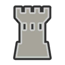 Tank's Patience Banner | Unique | - | After Stall (15), Tanks permanently gain 8 Defense. | Tank Class Relics | |
| Tank's Poisonplate Banner | Unique | - | Whenever a Tank is auto attacked, they apply 2 Poison to the attacker. | Tank Class Relics | |
| Tank's Frostplate Banner | Unique | - | Whenever a Tank is auto attacked, they apply 2 Frost to the attacker. | Tank Class Relics | |
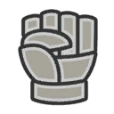 Tank's Resilience Banner | Unique | - | Whenever a Tank is auto attacked, they gain 2 Defense. | Tank Class Relics | |
| Unique | - | Vanguard's Rush abilities last 3 seconds longer. | Vanguard Class Relics | ||
| Vanguard's Aegis Banner | Unique | - | At start of combat, Vanguards gain Shields equal to 25% of their Max HP. | Vanguard Class Relics | |
| Vanguard's Rally Banner | Unique | - | For Rush (10), Vanguards gain 1 Attack and 1 Defense per 25 Max HP. | Vanguard Class Relics | |
| Vanguard's Flameplate Banner | Unique | - | Whenever a Vanguard is auto attacked, they inflict 4 Burn on the attacker. | Vanguard Class Relics | |
| Vanguard's Flamefists Banner | Unique | - | Whenever a Vanguard auto attacks, they inflict 4 Burn on their target. | Vanguard Class Relics | |
| Assassin's Smokescreen Banner | Unique | - | Assassins gain Stealth for 3 seconds the first time they go below 33% Max HP each combat. | Assassin Class Relics | |
| Assassin's Endurance Banner | Unique | - | Assassin's Rush abilities last 3 seconds longer. | Assassin Class Relics | |
| Assassin's Greed Banner | Unique | - | Assassins gain 1 Attack and 1 Magic per 5 Shards you've generated this game. | Assassin Class Relics | |
| Assassin's Patience Banner | Unique | - | Whenever an Assassin Crits, they permanently gain 1 Attack and 1 Magic. | Assassin Class Relics | |
| Assassin's Payday Banner | Unique | - | Whenever an Assassin kills an enemy, gain 4 Shards. | Assassin Class Relics | |
| Duelist's Precision Banner | Unique | - | Duelists gain 1 Crit per 5 Shards you've generated this game. | Duelist Class Relics | |
| Duelist's Toxin Banner | Unique | - | Whenever a Duelist auto attacks, they inflict 2 Poison on their target. | Duelist Class Relics | |
| Duelist's Chill Banner | Unique | - | Whenever a Duelist auto attacks, they inflict 2 Frost on their target. | Duelist Class Relics | |
| Duelist's Flame Banner | Unique | - | Whenever a Duelist auto attacks, they inflict 3 Burn on their target. | Duelist Class Relics | |
| Duelist's Outbreak Banner | Unique | - | Whenever a Duelist auto attacks, they deal 20 bonus damage per type of Debuff on their target. | Duelist Class Relics | |
| Mystic's Payday Banner | Unique | - | Every 5 times a Mystic casts, gain 1 Shard. | Mystic Class Relics | |
| Mystic's Prosperity Banner | Unique | - | Whenever a Mystic casts, they gain Magic equal to 50% of their Mana Regen. | Mystic Class Relics | |
| Mystic's Barrier Banner | Unique | - | Whenever a Mystic casts, they Shield the lowest-health Hero equal to 500% of their Mana Regen. | Mystic Class Relics | |
| Mystic's Outbreak Banner | Unique | - | Whenever a Mystic casts, they gain 2 Magic per type of Debuff on all enemies. | Mystic Class Relics | |
| Mystic's Protection Banner | Unique | - | Whenever a Mystic casts, they Shield the nearest Hero equal to the total number of Debuff stacks on all enemies. | Mystic Class Relics | |
| Mage's Elemental Banner | Unique | - | Whenever a Mage casts, all enemies in their range take 6 damage per Frost and 3 damage per Burn they have. | Mage Class Relics | |
| Mage's Inferno Banner | Unique | - | Whenever a Mage casts, they inflict Burn on their target equal to 150% of the Mana spent. | Mage Class Relics | |
| Mage's Frostbite Banner | Unique | - | Whenever a Mage casts, they inflict Frost on their target equal to 66% of the Mana spent. | Mage Class Relics | |
| Mage's Enlightenment Banner | Unique | - | After Stall (15), Mages permanently gain 10 Magic. | Mage Class Relics | |
| Mage's Serenity Banner | Unique | - | After Stall (15 and 30), Mages gain 100 Mana. | Mage Class Relics | |
| Warrior's Precise Reflection | Unique | - | Warriors gain 25 Attack and 15 Crit. | ClassBonusEventRelics, All ClassBonusEventRelics | |
| Warrior's Swift Reflection | Unique | - | Warriors gain 25 Attack and 20 Attack Speed. | ClassBonusEventRelics, All ClassBonusEventRelics | |
| Tank's Enchanted Reflection | Unique | - | Tanks gain 30 Defense and 25 Magic. | relic pool #54, All ClassBonusEventRelics | |
| Tank's Vital Reflection | Unique | - | Tanks gain 30 Defense and 200 Max HP. | relic pool #54, All ClassBonusEventRelics | |
| Vanguard's Combative Reflection | Unique | - | Vanguards gain 200 Max HP and 25 Attack. | relic pool #55, All ClassBonusEventRelics | |
| Vanguard's Plated Reflection | Unique | - | Vanguards gain 200 Max HP and 30 Defense. | relic pool #55, All ClassBonusEventRelics | |
| Assassin's Combative Reflection | Unique | - | Assassins gain 15 Crit and 25 Attack. | relic pool #56, All ClassBonusEventRelics | |
| Assassin's Enchanted Reflection | Unique | - | Assassins gain 15 Crit and 25 Magic. | relic pool #56, All ClassBonusEventRelics | |
| Duelist's Precise Reflection | Unique | - | Duelists gain 20 Attack Speed and 15 Crit. | relic pool #57, All ClassBonusEventRelics | |
| Duelist's Combative Reflection | Unique | - | Duelists gain 20 Attack Speed and 25 Attack. | relic pool #57, All ClassBonusEventRelics | |
| Mystic's Enchanted Reflection | Unique | - | Mystics gain 4 Mana Regen and 25 Magic. | relic pool #58, All ClassBonusEventRelics | |
| Mystic's Vital Reflection | Unique | - | Mystics gain 4 Mana Regen and 200 Max HP. | relic pool #58, All ClassBonusEventRelics | |
| Mage's Precise Reflection | Unique | - | Mages gain 25 Magic and 15 Crit. | relic pool #59, All ClassBonusEventRelics | |
| Mage's Flowing Reflection | Unique | - | Mages gain 25 Magic and 4 Mana Regen. | relic pool #59, All ClassBonusEventRelics | |
| Poison Bauble | Unique | - | At start of combat, inflict 10 Poison on all enemies. | Offensive Act 1 Regular Event, Defensive Act 1 Regular Event | |
| Poison Accumulator | Unique | - | Quest Act 1 Regular Event | ||
| Frost Bauble | Unique | - | At start of combat, inflict 10 Frost on all enemies. | Offensive Act 1 Regular Event, Defensive Act 1 Regular Event | |
| Frost Accumulator | Unique | - | Quest Act 1 Regular Event | ||
| Burn Bauble | Unique | - | At start of combat, inflict 20 Burn on all enemies. | Offensive Act 1 Regular Event, Defensive Act 1 Regular Event | |
| Burn Accumulator | Unique | - | Quest Act 1 Regular Event | ||
| Plague Bauble | Unique | - | At start of combat, inflict 3 Poison, 6 Frost, and 9 Burn on all enemies. | Offensive Act 1 Regular Event, Defensive Act 1 Regular Event | |
| Plague Collector | Unique | - | Quest Act 1 Regular Event | ||
| Shield Fluctuator | Unique | - | Heroes gain 20 Crit and 5 Mana Regen while Shielded. | Offensive Act 1 Regular Event | |
| Unique | - | At start of combat, heroes gain 250 lasting Shields. | Defensive Act 1 Regular Event | ||
| Shield Accumulator | Unique | - | Quest Act 1 Regular Event | ||
| Acceleration Fluctuator | Unique | - | On Rush trigger, give Heroes 10 Attack Speed and 10 Attack. | Offensive Act 1 Regular Event | |
| Acceleration Resonator | Unique | - | On Rush trigger, Heroes gain 200 Shields. | Defensive Act 1 Regular Event | |
| Acceleration Accumulator | Unique | - | Quest Act 1 Regular Event | ||
| Deceleration Fluctuator | Unique | - | On Stall Trigger: Heroes gain 10 Attack Speed and 10 Magic. | Offensive Act 1 Regular Event | |
| Deceleration Resonator | Unique | - | On Stall trigger, Heroes heal 250. | Defensive Act 1 Regular Event | |
| Deceleration Accumulator | Unique | - | Quest Act 1 Regular Event | ||
| Shard Fluctuator | Unique | - | On Shards generated, deal 500 damage to all enemies. | Offensive Act 1 Regular Event | |
| Shard Resonator | Unique | - | On Shards generated, Heroes gain 400 Shields. | Defensive Act 1 Regular Event | |
| Shard Accumulator | Unique | - | Quest Act 1 Regular Event | ||
| Unique | - | Gain 7 Shards. | |||
| Unique | - | For Combat #2 and Combat #3, earn 2 extra Shards per surviving Hero at end of combat. | |||
| Starter Kit: Sustained Shard Boost | Unique | - | Until the Act Boss, earn 1 extra Shard per surviving Hero at end of combat. | ||
| Starter Kit: Instant Rare Attack Item | Unique | - | Get a rare item which gives Attack to the holder. | ||
| Starter Kit: Instant Rare Max HP Item | Unique | - | Get a rare item which gives Max HP to the holder. | ||
| Starter Kit: Instant Rare Defense Item | Unique | - | Get a rare item which gives Defense to the holder. | ||
| Starter Kit: Instant Rare Crit Item | Unique | - | Get a rare item which gives Crit to the holder. | ||
| Starter Kit: Instant Rare Attack Speed Item | Unique | - | Get a rare item which gives Attack Speed to the holder. | ||
| Starter Kit: Instant Rare Mana Regen Item | Unique | - | Get a rare item which gives Mana Regen to the holder. | ||
| Starter Kit: Instant Rare Magic Item | Unique | - | Get a rare item which gives Magic to the holder. | ||
| Starter Kit: Temporary Item Discount | Unique | - | Until Combat #4, items cost 2 less. | ||
| Starter Kit: Instant Attack Boost | Unique | - | A Hero permanently gained 35 Attack. | ||
| Starter Kit: Instant Max HP Boost | Unique | - | A Hero permanently gained 300 Max HP. | ||
| Starter Kit: Instant Defense Boost | Unique | - | A Hero permanently gained 45 Defense. | ||
| Starter Kit: Instant Crit Boost | Unique | - | A Hero permanently gained 20 Crit. | ||
| Starter Kit: Instant Attack Speed Boost | Unique | - | A Hero permanently gained 30 Attack Speed. | ||
| Starter Kit: Instant Mana Regen Boost | Unique | - | A Hero permanently gained 6 Mana Regen. | ||
| Starter Kit: Instant Magic Boost | Unique | - | A Hero permanently gained 35 Magic. | ||
| Starter Kit: Temporary Attack Growth | Unique | - | At the start of Combat #2 and Combat #3, Heroes permanently gain 12 Attack. | ||
| Starter Kit: Temporary Max HP Growth | Unique | - | At the start of Combat #2 and Combat #3, Heroes permanently gain 100 Max HP. | ||
| Starter Kit: Temporary Defense Growth | Unique | - | At the start of Combat #2 and Combat #3, Heroes permanently gain 15 Defense. | ||
| Starter Kit: Temporary Crit Growth | Unique | - | At the start of Combat #2 and Combat #3, Heroes permanently gain 7 Crit. | ||
| Starter Kit: Temporary Attack Speed Growth | Unique | - | At the start of Combat #2 and Combat #3, Heroes permanently gain 10 Attack Speed. | ||
| Starter Kit: Temporary Mana Regen Growth | Unique | - | At the start of Combat #2 and Combat #3, Heroes permanently gain 2 Mana Regen. | ||
| Starter Kit: Temporary Magic Growth | Unique | - | At the start of Combat #2 and Combat #3, Heroes permanently gain 12 Magic. | ||
| Starter Kit: Sustained Attack | Unique | - | Until the Act Boss, Heroes gain 40 Attack. | ||
| Starter Kit: Sustained Item Expansion | Unique | - | Until the Act Boss, Heroes can equip an additional item (Max: 6). | ||
| Starter Kit: Sustained Max HP | Unique | - | Until the Act Boss, Heroes gain 300 Max HP. | ||
| Starter Kit: Sustained Defense | Unique | - | Until the Act Boss, Heroes gain 45 Defense. | ||
| Starter Kit: Sustained Crit | Unique | - | Until the Act Boss, Heroes gain 25 Crit. | ||
| Starter Kit: Sustained Attack Speed | Unique | - | Until the Act Boss, Heroes gain 25 Attack Speed. | ||
| Starter Kit: Sustained Mana Regen | Unique | - | Until the Act Boss, Heroes gain 6 Mana Regen. | ||
| Starter Kit: Sustained Magic | Unique | - | Until the Act Boss, Heroes gain 40 Magic | ||
| Unique | - | Heroes lose 12 Attack. | |||
| Unique | - | Heroes lose 100 Max HP. | |||
| Strange Blue Fruit: Defense Drained | Unique | - | Heroes lose 15 Defense. | ||
| Unique | - | Heroes lose 7 Crit. | |||
| Unique | - | Heroes lose 10 Attack Speed. | |||
| Unique | - | Heroes lose 2 Mana Regen. | |||
| Strange Blue Fruit: Magic Drained | Unique | - | Heroes lose 12 Magic | ||
| Strange Red Fruit: Attack Boost | Unique | - | Heroes gain 25 Attack. | ||
| Strange Red Fruit: Max HP Boost | Unique | - | Heroes gain 200 Max HP. | ||
| Strange Red Fruit: Defense Boost | Unique | - | Heroes gain 30 Defense. | ||
| Strange Red Fruit: Crit Boost | Unique | - | Heroes gain 15 Crit. | ||
| Strange Red Fruit: Attack Speed Boost | Unique | - | Heroes gain 20 Attack Speed. | ||
| Strange Red Fruit: Mana Regen Boost | Unique | - | Heroes gain 4 Mana Regen. | ||
| Strange Red Fruit: Magic Boost | Unique | - | Heroes gain 25 Magic. | ||
| Power of the Well | Unique | - | Heroes gain 10% basic stats. | ||
| Debt | Unique | - | At start of combat, Heroes take damage equal to 10% of their Max HP. | ||
| Strange Yellow Fruit | Unique | - | Heroes gain 500 Max HP. | ||
| The Red Rift | Unique | - | Enemies gain 5% basic stats. The Act 2 Boss resists Frost, reducing its effects by 50%. | ||
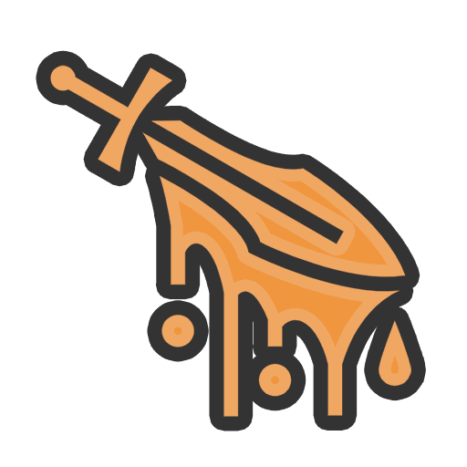 Warrior's Medallion | Common | 10 | Warriors gain 25 Attack. | Common Relics | |
| Tank's Medallion | Common | 10 | Tanks gain 30 Defense. | Common Relics | |
| Vanguard's Medallion | Common | 10 | Vanguards gain 200 Max HP. | Common Relics | |
| Assassin's Medallion | Common | 10 | Assassins gain 15 Crit. | Common Relics | |
| Duelist's Medallion | Common | 10 | Duelists gain 20 Attack Speed. | Common Relics | |
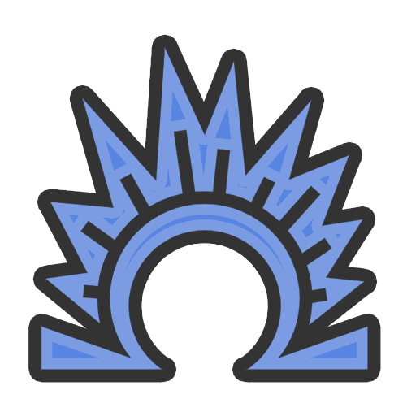 Mystic's Medallion | Common | 10 | Mystics gain 4 Mana Regen. | Common Relics | |
| Mage's Medallion | Common | 10 | Mages gain 25 Magic. | Common Relics | |
| Poison Bloom | Common | 10 | After Stall (10 and 20), inflict 10 Poison on all enemies. | Common Relics | |
| Frost Surge | Common | 10 | At start of combat, inflict 15 Frost on all enemies. | Common Relics | |
| Fire Starter | Common | 10 | Each second for Rush (10), inflict 3 Burn on all enemies. | Common Relics | |
| Shard Lattice | Common | 10 | On combat victory, gain 3 Shards. | Common Relics | |
| Deceleration Lattice | Common | 10 | After Stall (20), Heroes gain 15 HP/S. | Common Relics | |
| Acceleration Lattice | Common | 10 | For Rush (10), Heroes gain 25 HP/S. | Common Relics | |
| Precision Lattice | Common | 10 | Each Hero's first attack against each enemy gains 250 Crit. | Common Relics | |
| Shield Generator | Common | 10 | At start of combat, Heroes gain 400 lasting Shields. | Common Relics | |
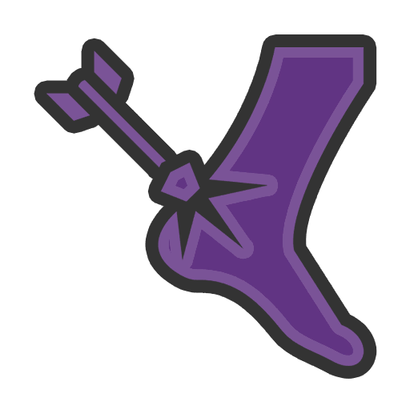 Plague Generator | Common | 10 | At start of combat, inflict 5 Poison, 10 Frost, and 15 Burn on all enemies. | Common Relics | |
| Frontline Defender | Common | 10 | At start of combat, Heroes in the front row gain 100 Max HP and 15 Defense. | Common Relics | |
| Backline Aggressor | Common | 10 | At start of combat, Heroes in the back row gain 10 Attack Speed and 15 Crit. | Common Relics | |
| Poison Vessel | Common | 10 | Common Relics, Starting Pool | ||
| Basic Differentiator | Common | 10 | Shop rerolls cost 1 less. | Common Relics | |
| Frost Vessel | Common | 10 | Common Relics, Starting Pool | ||
| Burn Vessel | Common | 10 | Common Relics, Starting Pool | ||
| Shard Vessel | Common | 10 | Common Relics, Starting Pool | ||
| Deceleration Vessel | Common | 10 | Common Relics, Starting Pool | ||
| Acceleration Vessel | Common | 10 | Common Relics, Starting Pool | ||
| Critical Vessel | Common | 10 | Common Relics, Starting Pool | ||
| Shield Vessel | Common | 10 | Common Relics, Starting Pool | ||
| Common | 10 | Common Relics, Starting Pool | |||
| Divergence Vessel | Common | 10 | Divergence Quest, Common Relics, Starting Pool | ||
| Common | 10 | Common Relics, Starting Pool | |||
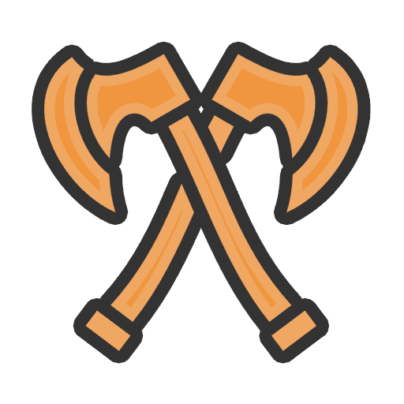 Warrior's Memento | Rare | 20 | For each Warrior in combat, Rush abilities last 2 seconds longer. | Rare Relics, Rare All No Quest, Rare Class Relics, Endless Rare Relics | |
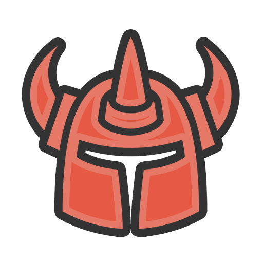 Warrior's Emblem | Rare | 20 | If there is a Warrior in combat, your Hero's auto attacks gain 50 Crit. | Rare Relics, Rare All No Quest, Rare Class Relics, Endless Rare Relics | |
| Tank's Memento | Rare | 20 | At start of combat, inflict 25 Poison on all enemies per Tank in combat. | Rare Relics, Rare All No Quest, Rare Class Relics, Endless Rare Relics | |
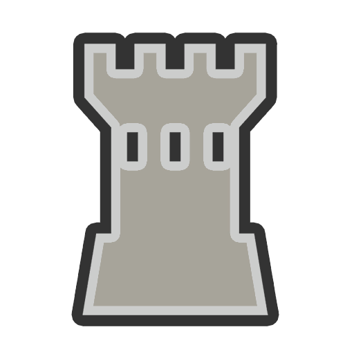 Tank's Emblem | Rare | 20 | Each second if there is a Tank in combat, Heroes gain 1 Defense. | Rare Relics, Rare All No Quest, Rare Class Relics, Endless Rare Relics | |
| Vanguard's Memento | Rare | 20 | At start of combat, inflict 45 Burn on all enemies per Vanguard in combat. | Rare Relics, Rare All No Quest, Rare Class Relics, Endless Rare Relics | |
| Vanguard's Emblem | Rare | 20 | Every 5 seconds if there is a Vanguard in combat, Heroes gain 150 Shields. | Rare Relics, Rare All No Quest, Rare Class Relics, Endless Rare Relics | |
| Assassin's Memento | Rare | 20 | At start of combat, gain 5 Shards per Assassin in combat. | Rare Relics, Rare All No Quest, Rare Class Relics, Endless Rare Relics | |
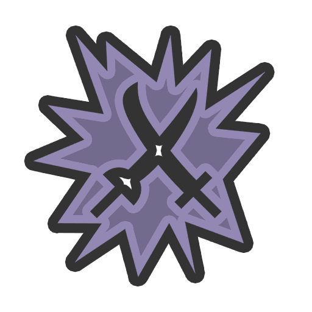 Assassin's Emblem | Rare | 20 | If there is an Assassin in combat, Heroes gain Stealth for 3 seconds the first time they go below 66% Max HP each combat. | Rare Relics, Rare All No Quest, Rare Class Relics, Endless Rare Relics | |
| Duelist's Memento | Rare | 20 | For each Duelist in combat, Stall abilities trigger 4 seconds earlier. | Rare Relics, Rare All No Quest, Rare Class Relics, Endless Rare Relics | |
| Duelist's Emblem | Rare | 20 | If there is a Duelist in combat, Heroes deal 30 bonus damage with each auto attack. | Rare Relics, Rare All No Quest, Rare Class Relics, Endless Rare Relics | |
| Mystic's Memento | Rare | 20 | At start of combat, Heroes gain a 15% Max HP Shield per Mystic in combat. | Rare Relics, Rare All No Quest, Rare Class Relics, Endless Rare Relics | |
| Mystic's Emblem | Rare | 20 | If there is a Mystic in combat, Heroes gain 4 Mana Regen and 10 HP/S. | Rare Relics, Rare All No Quest, Rare Class Relics, Endless Rare Relics | |
| Mage's Memento | Rare | 20 | At start of combat, inflict 12 Frost on all enemies per Mage in combat. | Rare Relics, Rare All No Quest, Rare Class Relics, Endless Rare Relics | |
| Mage's Emblem | Rare | 20 | If there is a Mage in combat, your Hero's active abilities gain 100 Crit. | Rare Relics, Rare All No Quest, Rare Class Relics, Endless Rare Relics | |
| Arcane Amplifier | Rare | 20 | Mages and Mystics gain 50 Magic and 4 Mana Regen. | Rare Relics, Rare All No Quest, Rare Class Relics, Endless Rare Relics | |
| Martial Amplifier | Rare | 20 | Assassins, Duelists, and Warriors gain 15 Crit, 20 Attack Speed, and 25 Attack. | Rare Relics, Rare All No Quest, Rare Class Relics, Endless Rare Relics | |
| Defensive Amplifier | Rare | 20 | Tanks and Vanguards gain 45 Defense and 300 Max HP. | Rare Relics, Rare All No Quest, Rare Class Relics, Endless Rare Relics | |
| Multiclass Conduit | Rare | 20 | Rare Relics, Rare Quest Only, Endless Rare Relics | ||
| Deceleration Nexus | Rare | 20 | Every 2 Stall triggers, gain 1 Shard. | Rare Relics, Rare All No Quest, Generic Rare Relic, Endless Rare Relics | |
| Deceleration Reactor | Rare | 20 | On Stall trigger, give Heroes a 10% Max HP Shield and 8 Mana. | Rare Relics, Rare All No Quest, Generic Rare Relic, Endless Rare Relics | |
| Deceleration Conduit | Rare | 20 | Rare Relics, Rare Quest Only, Endless Rare Relics | ||
| Acceleration Nexus | Rare | 20 | Every 2 Rush triggers, gain 1 Shard. | Rare Relics, Rare All No Quest, Generic Rare Relic, Endless Rare Relics | |
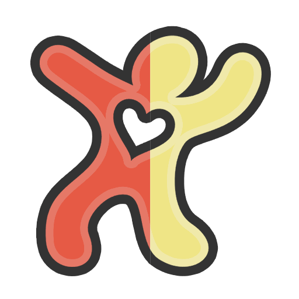 Acceleration Reactor | Rare | 20 | On Rush trigger, give Heroes 5 Crit and 10 Attack Speed. | Rare Relics, Rare All No Quest, Generic Rare Relic, Endless Rare Relics | |
| Acceleration Conduit | Rare | 20 | Rare Relics, Rare Quest Only, Endless Rare Relics | ||
| Precision Nexus | Rare | 20 | On Crit, the Hero that Crit heals 30 and gains 3 Mana. | Rare Relics, Rare All No Quest, Generic Rare Relic, Endless Rare Relics | |
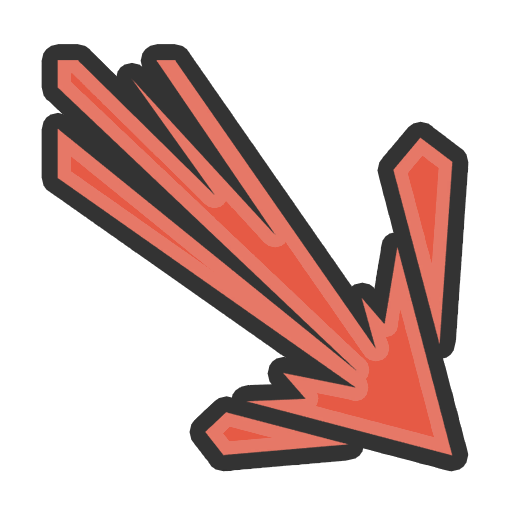 Precision Reactor | Rare | 20 | For Rush (10), Heroes gain 60 Crit. | Rare Relics, Rare All No Quest, Generic Rare Relic, Endless Rare Relics | |
| Precision Conduit | Rare | 20 | Rare Relics, Rare Quest Only, Endless Rare Relics | ||
| Shard Extractor | Rare | 20 | On combat victory, gain 6 Shards. | Rare Relics, Rare Generic No Quest, Rare All No Quest, Generic Rare Relic, Endless Rare Relics | |
| Shard Constructor | Rare | 20 | After Stall (30), gain 9 Shards. | Rare Relics, Rare Generic No Quest, Rare All No Quest, Generic Rare Relic, Endless Rare Relics | |
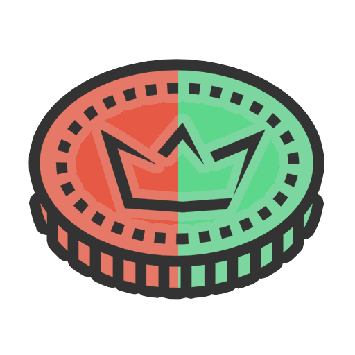 Generation Conduit | Rare | 20 | Rare Relics, Rare Quest Only, Endless Rare Relics | ||
| Poison Amplifier | Rare | 20 | Whenever a Hero inflicts Poison, inflict 33% more. | Rare Relics, Rare Generic No Quest, Rare All No Quest, Debuff Class Relics, Endless Rare Relics | |
| Poison Catalyst | Rare | 20 | After Stall (15), whenever an enemy with Poison is auto attacked, they take damage equal to their Poison. | Rare Relics, Rare All No Quest, Debuff Class Relics, Endless Rare Relics | |
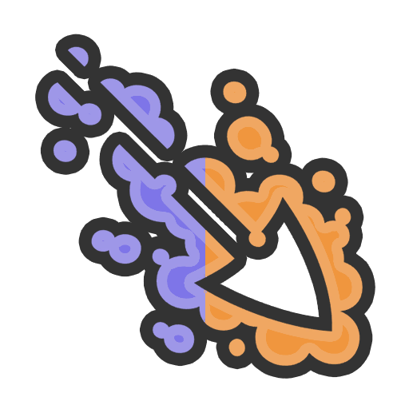 Poison Conduit | Rare | 20 | Rare Relics, Rare Quest Only, Debuff Class Relics, Endless Rare Relics | ||
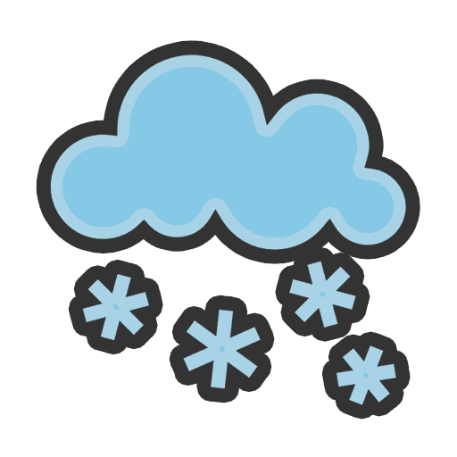 Frost Amplifier | Rare | 20 | Whenever a Hero inflicts Frost, inflict 33% more. | Rare Relics, Rare Generic No Quest, Rare All No Quest, Debuff Class Relics, Endless Rare Relics | |
| Frost Catalyst | Rare | 20 | After Stall (15, 30, and 45), all enemies receive damage equal to 5 times the amount of Frost they have. | Rare Relics, Rare All No Quest, Debuff Class Relics, Endless Rare Relics | |
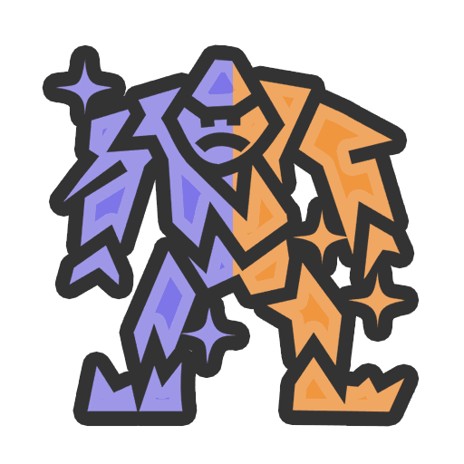 Frost Conduit | Rare | 20 | Rare Relics, Rare Quest Only, Debuff Class Relics, Endless Rare Relics | ||
| Burn Amplifier | Rare | 20 | Whenever a Hero inflicts Burn, inflict 33% more. | Rare Relics, Rare Generic No Quest, Rare All No Quest, Debuff Class Relics, Endless Rare Relics | |
| Burn Catalyst | Rare | 20 | For Rush (15), enemies receive 50% more Burn damage. | Rare Relics, Rare All No Quest, Debuff Class Relics, Endless Rare Relics | |
| Burn Conduit | Rare | 20 | Rare Relics, Rare Quest Only, Debuff Class Relics, Endless Rare Relics | ||
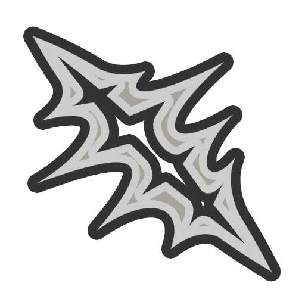 Plague Harvester | Rare | 20 | After Stall (15), Heroes gain 1 Defense and 1 Magic per 25 Debuffs on all enemies. | Rare Relics, Rare All No Quest, Debuff Class Relics, Endless Rare Relics | |
| Plague Amplifier | Rare | 20 | For Rush (12), if an enemy would gain a Debuff they gain 1 more. | Rare Relics, Rare All No Quest, Debuff Class Relics, Endless Rare Relics | |
| Plague Conduit | Rare | 20 | Rare Relics, Rare Quest Only, Endless Rare Relics | ||
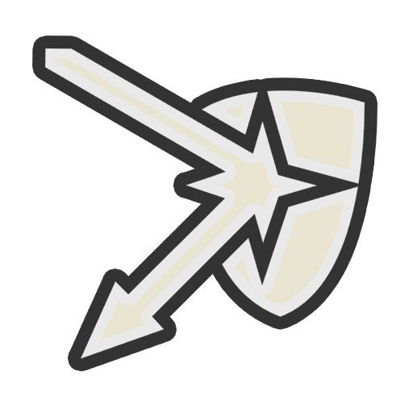 Shield Repriser | Rare | 20 | Whenever an enemy damages a Hero's Shields, deal 100% of the damage back to the source. | Rare Relics, Rare All No Quest, Generic Rare Relic, Endless Rare Relics | |
| Shield Bastion | Rare | 20 | After Stall (15), Heroes gain a lasting 33% Max HP Shield. | Rare Relics, Rare Generic No Quest, Rare All No Quest, Generic Rare Relic, Endless Rare Relics | |
| Shield Conduit | Rare | 20 | Rare Relics, Rare Quest Only, Endless Rare Relics | ||
| Combative Codex | Rare | 20 | Heroes gain 1d9 Attack. On combat victory, permanently increase the Attack gained by 6. | Rare Relics, Rare Generic No Quest, Rare All No Quest, Generic Rare Relic, Endless Rare Relics | |
| Enchanted Codex | Rare | 20 | Heroes gain 1d9 Magic. On combat victory, permanently increase the Magic gained by 6. | Rare Relics, Rare Generic No Quest, Rare All No Quest, Generic Rare Relic, Endless Rare Relics | |
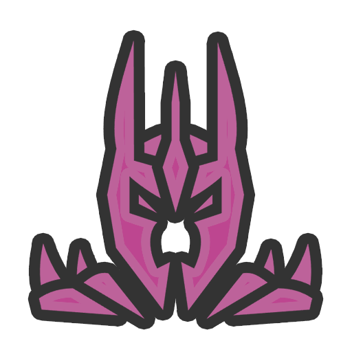 Vampiric Codex | Rare | 20 | Heroes gain 1d3 Omnivamp. On combat victory, permanently increase the Omnivamp gained by 2. | Rare Relics, Rare Generic No Quest, Rare All No Quest, Generic Rare Relic, Endless Rare Relics | |
| Vital Codex | Rare | 20 | Heroes gain 1d75 Max HP. On combat victory, permanently increase the Max HP gained by 50. | Rare Relics, Rare Generic No Quest, Rare All No Quest, Generic Rare Relic, Endless Rare Relics | |
| Plated Codex | Rare | 20 | Heroes gain 1d15 Defense. On combat victory, permanently increase the Defense gained by 10. | Rare Relics, Rare Generic No Quest, Rare All No Quest, Generic Rare Relic, Endless Rare Relics | |
| Precise Codex | Rare | 20 | Heroes gain 1d6 Crit. On combat victory, permanently increase the Crit gained by 4. | Rare Relics, Rare Generic No Quest, Rare All No Quest, Generic Rare Relic, Endless Rare Relics | |
| Swift Codex | Rare | 20 | Heroes gain 1d8 Attack Speed. On combat victory, permanently increase the Attack Speed gained by 5. | Rare Relics, Rare Generic No Quest, Rare All No Quest, Generic Rare Relic, Endless Rare Relics | |
| Frontline Embiggener | Rare | 20 | At start of combat, Heroes in the front row gain 400 Max HP and grow in size. | Rare Relics, Rare Generic No Quest, Rare All No Quest, Generic Rare Relic, Endless Rare Relics | |
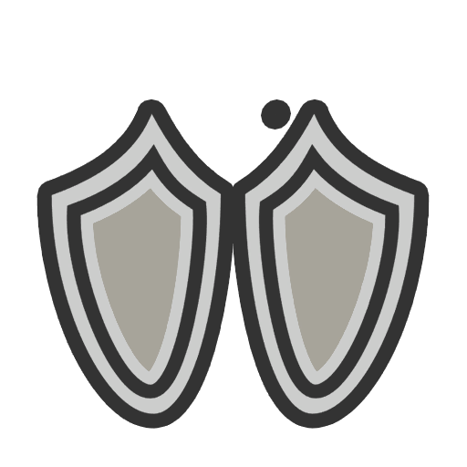 Frontline Barricader | Rare | 20 | At start of combat, Heroes in the front row gain 60 Defense and grow in size. | Rare Relics, Rare Generic No Quest, Rare All No Quest, Generic Rare Relic, Endless Rare Relics | |
| Backline Sharpener | Rare | 20 | At start of combat, Heroes in the back row gain 25 Crit and increased move speed. | Rare Relics, Rare Generic No Quest, Rare All No Quest, Generic Rare Relic, Endless Rare Relics | |
| Backline Quickener | Rare | 20 | At start of combat, Heroes in the back row gain 40 Attack Speed and increased move speed. | Rare Relics, Rare Generic No Quest, Rare All No Quest, Generic Rare Relic, Endless Rare Relics | |
| Advanced Differentiator | Rare | 20 | Shop rerolls cost 2 less. | Rare Relics, Rare Generic No Quest, Rare All No Quest, Generic Rare Relic, Endless Rare Relics | |
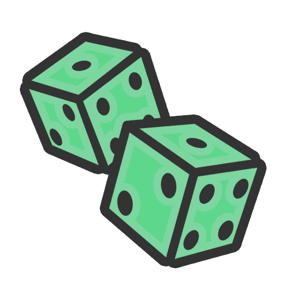 Protective Differentiator | Rare | 20 | After Stall (15 and 30), give Heroes a lasting 1% Max HP Shield for each time you've rerolled the shop this game. | Rare Relics, Rare All No Quest, Generic Rare Relic, Endless Rare Relics | |
| Violence Conduit | Rare | 20 | Rare Relics, Rare Quest Only, Endless Rare Relics | ||
| Arcane Conduit | Rare | 20 | Rare Relics, Rare Quest Only, Endless Rare Relics | ||
| Warrior's Exaltation Prism | Epic | 30 | Whenever a Warrior kills, they gain +50% Attack, heal 100% of their Max HP and gain 100 Mana. | Epic Relics, Epic No Quest, Endless Epic Relics | |
| Warrior's Sundering Filigree | Epic | 30 | For Rush (8), whenever a Warrior Crits an enemy reduce the enemy's Defense by 15. | Epic Relics, Epic No Quest, Endless Epic Relics | |
| Tank's Intercession Prism | Epic | 30 | Tanks gain 50 Defense per enemy targeting them. Every 10 Seconds, the Tank with the highest current HP Taunts all enemies. | Epic Relics, Epic No Quest, Endless Epic Relics | |
| Tank's Invigoration Filigree | Epic | 30 | After Stall (20), Tanks gain 1 HP/S per 8 Defense they have. | Epic Relics, Epic No Quest, Endless Epic Relics | |
| Vanguard's Frenzy Prism | Epic | 30 | Whenever a Vanguard goes below 50% Max HP for the first time each combat they gain +33% Attack Speed, +33% Attack, and +33% Defense. | Epic Relics, Epic No Quest, Endless Epic Relics | |
| Vanguard's Amplification Filigree | Epic | 30 | For Rush (8), Vanguards gain +100% Max HP. | Epic Relics, Epic No Quest, Endless Epic Relics | |
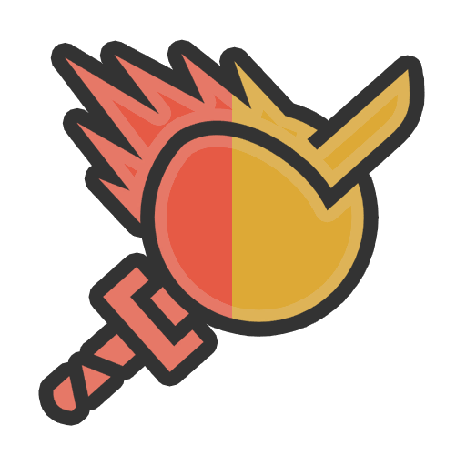 Assassin's Elevation Prism | Epic | 30 | Whenever an Assassin kills an enemy they permanently gain 7 Crit then you gain 1 Shard per 100 Crit they have (Max: 10). | Epic Relics, Epic No Quest, Endless Epic Relics | |
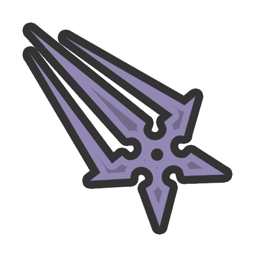 Assassin's Supremacy Filigree | Epic | 30 | At start of combat, Assassins gain Stealth for 5 seconds. For Rush (10), Assassins gain 200 Crit. | Epic Relics, Epic No Quest, Endless Epic Relics | |
| Duelist's Rhythm Prism | Epic | 30 | Whenever a Duelist auto attacks, they randomly inflict 2 Poison, 4 Frost, or 6 Burn on their target. | Epic Relics, Epic No Quest, Endless Epic Relics | |
| Duelist's Profusion Filigree | Epic | 30 | After Stall (10), whenever a Duelist auto attacks they also hit the nearest enemy to their target, dealing 33% damage and applying on-hit effects. | Epic Relics, Epic No Quest, Endless Epic Relics | |
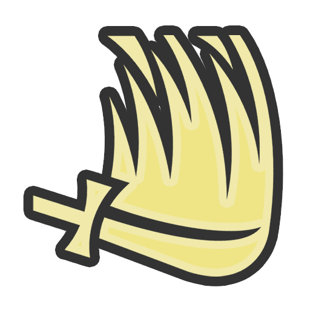 Duelist's Fury Filigree | Epic | 30 | For Rush (10), Duelists gain 150 Attack Speed. | Epic Relics, Epic No Quest, Endless Epic Relics | |
| Mystic's Inundation Prism | Epic | 30 | Whenever a Mystic Shields a Hero, damage their nearest enemy for 100% of the Shield applied. | Epic Relics, Epic No Quest, Endless Epic Relics | |
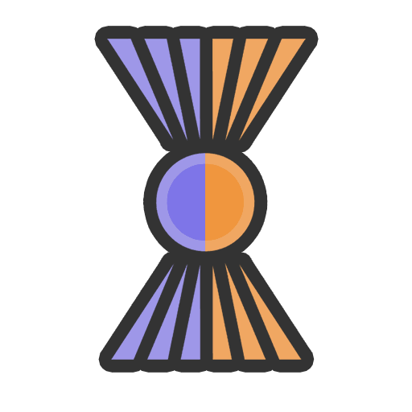 Mystic's Prosperity Filigree | Epic | 30 | Whenever a Mystic casts after Stall (15), they give the nearest Hero Magic and Attack equal to 66% of their Mana Regen. | Epic Relics, Epic No Quest, Endless Epic Relics | |
| Mage's Transmutation Prism | Epic | 30 | Whenever a Mage auto attacks, they deal bonus damage to their target equal to 100% of their Magic. | Epic Relics, Epic No Quest, Endless Epic Relics | |
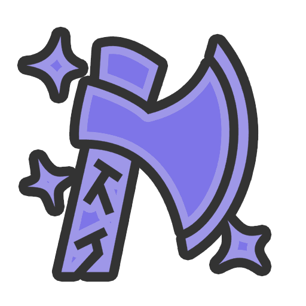 Mage's Administration Filigree | Epic | 30 | Whenever a Mage casts, they deal damage to the lowest-health enemy equal to 400% of their Magic. | Epic Relics, Epic No Quest, Endless Epic Relics | |
| Perfect Divergence Prism | Epic | 30 | At start of combat, if no Heroes in combat share a Class all Heroes gain +25% to all their basic stats. | Epic Relics, Generic Good Epic Relics No Quest, Epic No Quest, Endless Epic Relics | |
| Perfect Unity Prism | Epic | 30 | At start of combat, if all Heroes in combat share a Class all Heroes gain +20% to all their basic stats. | Epic Relics, Generic Good Epic Relics No Quest, Epic No Quest, Endless Epic Relics | |
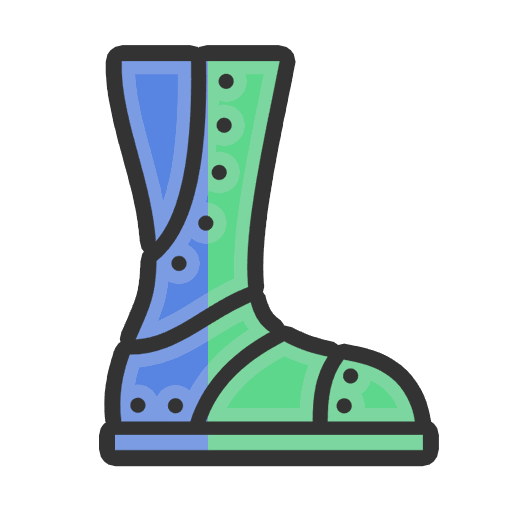 Trigger Safeguard Activator | Epic | 30 | On Stall or Rush trigger, give Heroes a lasting 10% Max HP Shield and 2 Mana Regen. | Epic Relics, Epic No Quest, Endless Epic Relics | |
| Trigger Bounty Activator | Epic | 30 | Every other Stall trigger, gain 1 Shard. Every other Rush trigger, gain 1 Shard. | Epic Relics, Epic No Quest, Endless Epic Relics | |
| Trigger Synchrony Activator | Epic | 30 | Every 3 Stall triggers, Stun all enemies for 2 seconds. Every 3 Rush triggers, Stun all enemies for 2 seconds. | Epic Relics, Epic No Quest, Endless Epic Relics | |
| Deceleration Ascendancy | Epic | 30 | Epic Relics, Epic Quest Only, Endless Epic Relics | ||
| Deceleration Apotheosis | Epic | 30 | After Stall (25, 50, and 75), give Heroes +15% to all their basic stats. | Epic Relics, Generic Good Epic Relics No Quest, Epic No Quest, Endless Epic Relics | |
| Deceleration Corruptor | Epic | 30 | After Stall (15, 30, and 45), double the amount of Poison on all enemies. | Epic Relics, Epic No Quest, Endless Epic Relics | |
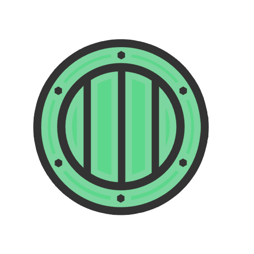 Deceleration Aegis | Epic | 30 | After Stall (15, 30, and 45), Heroes gain 700 lasting Shields. | Epic Relics, Generic Good Epic Relics No Quest, Epic No Quest, Endless Epic Relics | |
| Deceleration Filigree | Epic | 30 | After Stall (30 and 60), gain 12 Shards. | Epic Relics, Generic Good Epic Relics No Quest, Epic No Quest, Endless Epic Relics | |
| Acceleration Ascendancy | Epic | 30 | Epic Relics, Epic Quest Only, Endless Epic Relics | ||
| Acceleration Immunizer | Epic | 30 | For Rush (2), Heroes are immune to damage. | Epic Relics, Generic Good Epic Relics No Quest, Epic No Quest, Endless Epic Relics | |
| Acceleration Prism | Epic | 30 | On Rush trigger, give Heroes 15 Crit. | Epic Relics, Epic No Quest, Endless Epic Relics | |
| Immolation Accelerator | Epic | 30 | On Rush trigger, inflict 20 Burn on all enemies. | Epic Relics, Epic No Quest, Endless Epic Relics | |
| Acceleration Filigree | Epic | 30 | On kill for Rush (20), gain 12 Shards. | Epic Relics, Epic No Quest, Endless Epic Relics | |
| Plague Accelerator | Epic | 30 | For Rush (12), if an enemy would gain a Debuff they gain 2 more. | Epic Relics, Epic No Quest, Endless Epic Relics | |
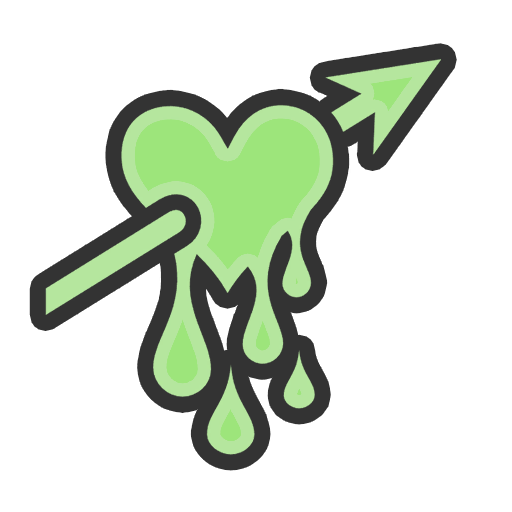 Critical Absorption Prism | Epic | 30 | On Crit, the Hero that Crit steals 40 Max HP from their target. | Epic Relics, Generic Good Epic Relics No Quest, Epic No Quest, Endless Epic Relics | |
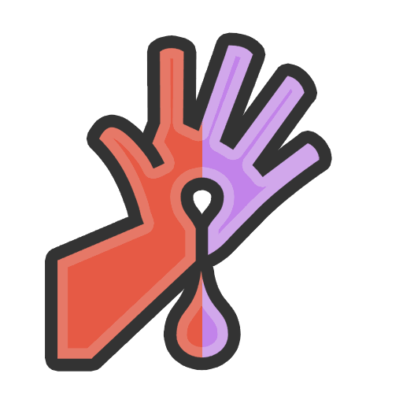 Critical Ascendancy | Epic | 30 | Epic Relics, Epic Quest Only, Endless Epic Relics | ||
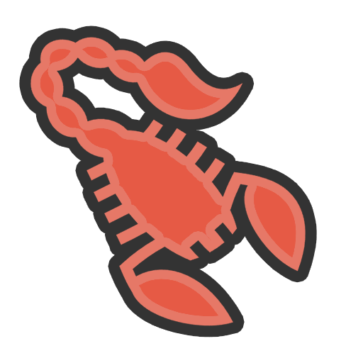 Venom Precision Prism | Epic | 30 | Whenever an enemy takes Poison damage, Heroes gain 2 Crit. | Epic Relics, Epic No Quest, Endless Epic Relics | |
| Shield Converter | Epic | 30 | Whenever a Hero gains Shields from any source but itself, damage the nearest enemy to them for 50% of the Shield applied. | Epic Relics, Epic No Quest, Endless Epic Relics | |
| Shield Ascendancy | Epic | 30 | Epic Relics, Epic Quest Only, Endless Epic Relics | ||
| Shield Investment Filigree | Epic | 30 | At start of combat and after Stall (20), spend 1 Shard to apply 250 lasting Shields to all Heroes, then permanently increase the amount of Shields this applies by 50. | Epic Relics, Epic No Quest, Endless Epic Relics | |
| Shard Maximizer | Unique | - | Gain interest on saved Shards. At the end of each combat, gain 1 additional Shard per 5 Shards in your bank (Max: 20. Does not count towards generation). | Shard Maximizer, Starting Pool | |
| Epic | 30 | Epic Relics, Epic Quest Only, Endless Epic Relics | |||
| Shard Precision Prism | Epic | 30 | Heroes gain Crit equal to the number of Shards in bank (Max: 1000). | Epic Relics, Epic No Quest, Endless Epic Relics | |
| Poison Migrator | Epic | 30 | Whenever an enemy dies, transfer their Poison to the nearest enemy. | Epic Relics, Epic No Quest, Endless Epic Relics | |
| Poison Ascendancy | Epic | 30 | Epic Relics, Epic Quest Only, Endless Epic Relics | ||
| Blight Resonance Prism | Epic | 30 | Whenever an enemy takes Poison or Burn damage, heal all adjacent Heroes to them for 50% of that damage. | Epic Relics, Epic No Quest, Endless Epic Relics | |
| Frost Migrator | Epic | 30 | Whenever an enemy dies, transfer their Frost to the nearest enemy. | Epic Relics, Epic No Quest, Endless Epic Relics | |
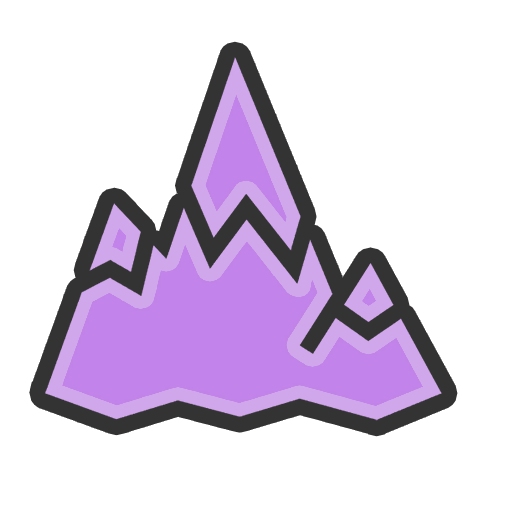 Frost Ascendancy | Epic | 30 | Epic Relics, Epic Quest Only, Endless Epic Relics | ||
| Glacial Guard Prism | Epic | 30 | Whenever a Hero inflicts Frost, they gain 6 Shields per Frost inflicted. | Epic Relics, Epic No Quest, Endless Epic Relics | |
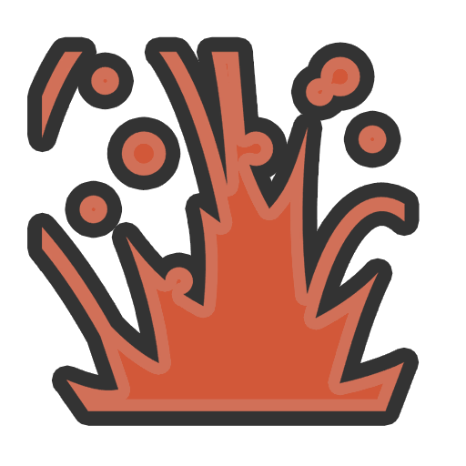 Burn Migrator | Epic | 30 | Whenever an enemy dies, transfer their Burn to the nearest enemy. | Epic Relics, Epic No Quest, Endless Epic Relics | |
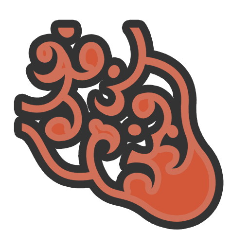 Burn Ascendancy | Epic | 30 | Epic Relics, Epic Quest Only, Endless Epic Relics | ||
| Thermal Inverter | Epic | 30 | Whenever a Hero inflicts Burn, also inflict 50% of the Burn applied as Frost. Whenever a Hero inflicts Frost, also inflict 50% of the Frost applied as Burn. | Epic Relics, Epic No Quest, Endless Epic Relics | |
| Plague Velocitizer | Epic | 30 | Every 4 seconds, Heroes gain 1 Attack Speed and 2 Attack per type of Debuff on all enemies. | Epic Relics, Epic No Quest, Endless Epic Relics | |
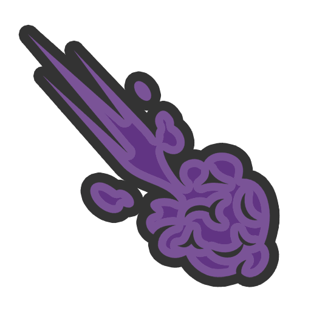 Plague Ascendancy | Epic | 30 | Epic Relics, Epic Quest Only, Endless Epic Relics | ||
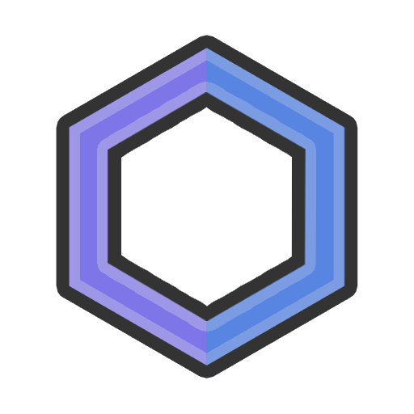 Arcane Backup Prism | Epic | 30 | Heroes gain 20 Magic per rank of each Mage in the reserves and 2 Mana Regen per rank of each Mystic in the reserves. | Epic Relics, Generic Good Epic Relics No Quest, Epic No Quest, Endless Epic Relics | |
| Martial Backup Prism | Epic | 30 | Heroes gain 10 Crit per rank of each Assassin in the reserves, 15 Attack Speed per rank of each Duelist in the reserves, and 20 Attack per rank of each Warrior in the reserves. | Epic Relics, Generic Good Epic Relics No Quest, Epic No Quest, Endless Epic Relics | |
| Defensive Backup Prism | Epic | 30 | Heroes gain 30 Defense per rank of each Tank in the reserves and 200 Max HP per rank of each Vanguard in the reserves. | Epic Relics, Generic Good Epic Relics No Quest, Epic No Quest, Endless Epic Relics | |
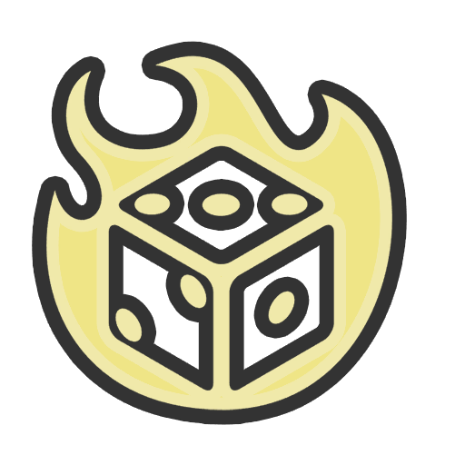 Momentous Differentiator | Epic | 30 | Heroes gain 2 Attack Speed for each time you've rerolled the shop this game. | Epic Relics, Generic Good Epic Relics No Quest, Epic No Quest, Endless Epic Relics | |
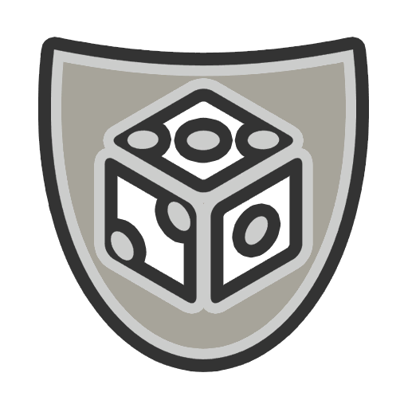 Stalwart Differentiator | Epic | 30 | Heroes gain 3 Defense for each time you've rerolled the shop this game. | Epic Relics, Generic Good Epic Relics No Quest, Epic No Quest, Endless Epic Relics | |
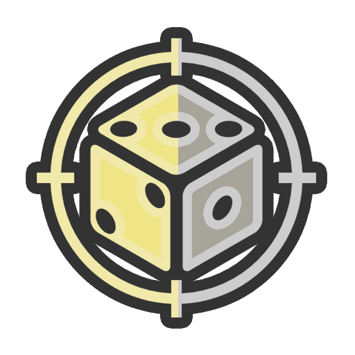 Alignment Ascendancy | Epic | 30 | Epic Relics, Endless Epic Relics | ||
| Reputation Ascendancy | Epic | 30 | yes | Epic Relics, Epic Quest Only, Endless Epic Relics | |
| Golden Ascendancy | Epic | 30 | Epic Relics, Epic Quest Only, Endless Epic Relics | ||
| Reserve Ascendancy | Epic | 30 | Epic Relics, Epic Quest Only, Endless Epic Relics | ||
| Shard Energy Velocitizer | Epic | 30 | Heroes gain 1 Attack Speed per 5 Shards you've generated this game. | Epic Relics, Epic No Quest, Endless Epic Relics | |
| Warrior's Bloodshield Engine | Legendary | 40 | Heroes gain 50 Attack. Whenever a Warrior deals damage, they gain lasting Shields equal to 10% of the damage dealt. | Legendary Relics | |
| Tank's Absolution Engine | Legendary | 40 | Heroes gain 60 Defense. Every 8 times a Tank is auto attacked, Stun that attacking enemy for 1.5 seconds. | Legendary Relics | |
| Vanguard's Titanic Engine | Legendary | 40 | Heroes gain 400 Max HP. Whenever a Vanguard auto attacks or is auto attacked, they gain 10 Max HP. Every 200 Max HP gained this way, give them 25 Attack and increase their size. | Legendary Relics | |
| Assassin's Ambush Engine | Legendary | 40 | Heroes gain 30 Crit. Whenever an Assassin auto attacks while Stealthed, they inflict Poison on their target equal to 75% of their Crit. At start of combat, Assassins in the back 2 rows gain Stealth for 5 seconds and target the most threatening enemy. | Legendary Relics | |
| Duelist's Momentum Engine | Legendary | 40 | Heroes gain 40 Attack Speed. Whenever a Duelist auto attacks, they deal 5 bonus damage for each time they have auto attacked this combat. | Legendary Relics | |
| Mystic's Abundance Engine | Legendary | 40 | Heroes gain 8 Mana Regen. Whenever a Mystic Shields a Hero, give that Hero lasting Shields equal to 33% of the Shield applied. | Legendary Relics | |
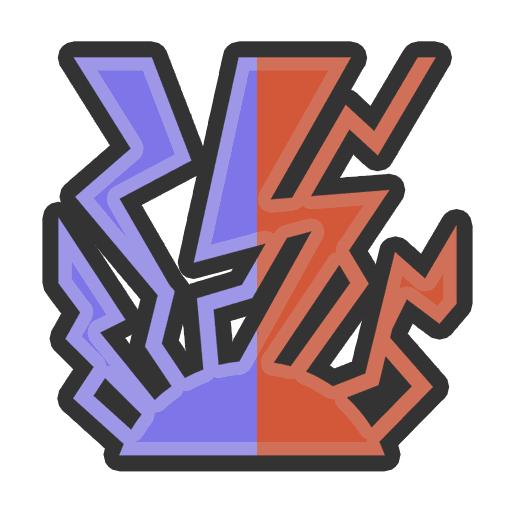 Mage's Cataclysm Engine | Legendary | 40 | Heroes gain 50 Magic. Whenever a Mage casts, they inflict Burn and Frost on all enemies in their range equal to 15% of their Magic. | Legendary Relics | |
| Slaughter Mandate | LegendaryQuest | 25 | |||
| Arcane Mandate | LegendaryQuest | 25 | |||
| Shelter Mandate | LegendaryQuest | 25 | |||
| Merchant Mandate | LegendaryQuest | 25 | |||
| Dominion Mandate | LegendaryQuest | 25 | |||
| Unity Mandate | LegendaryQuest | 25 | |||
| Omnity Mandate | LegendaryQuest | 25 | |||
| Greed Mandate | LegendaryQuest | 25 | |||
| Deceleration Mandate | LegendaryQuest | 25 | |||
| Acceleration Mandate | LegendaryQuest | 25 | |||
| Critical Singularity | Legendary | 40 | At start of combat, each Hero with less than 150 Crit has their Crit set to 150. Each Hero with 150 or more Crit has their Attack Speed, Attack, and Magic set to 150 if they had less than 150 of those stats. | Legendary Relics | |
| Shield Fragmentation Engine | Legendary | 40 | Whenever an enemy damages a Hero's Shields, deal 350% of the damage back to the source. | Legendary Relics | |
| Venom Amplification Engine | Legendary | 40 | Whenever an enemy takes 50 or more damage from Poison, they also take damage equal to 4% of their Max HP. | Legendary Relics | |
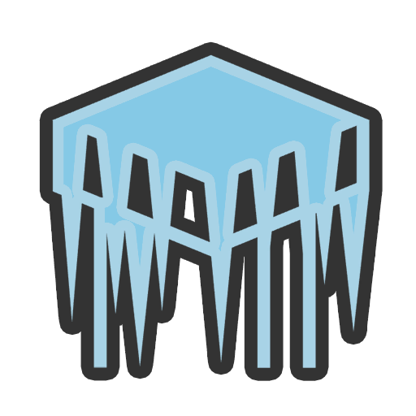 Glacial Decay Engine | Legendary | 40 | Frost now deals damage to enemies when it ticks down (like Burn does). | Legendary Relics | |
| Burning Spiral Engine | Legendary | 40 | Whenever an enemy with 100 or more Burn dies, damage all enemies in a large area around them equal to 66% of their Max HP. | Legendary Relics | |
| Plague Transmission Engine | Legendary | 40 | At start of combat and every 10 seconds, inflict 10 Poison, 20 Frost, and 30 Burn on all enemies. | Legendary Relics | |
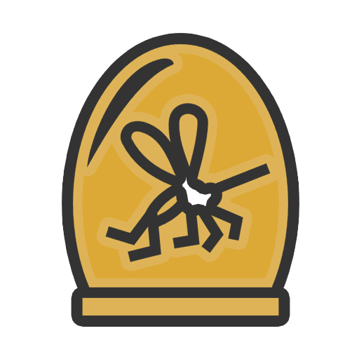 Deceleration Legacy Crystal | Legendary | 40 | After Stall (45), Heroes gain +1% basic stats for every 2 times you've triggered Stall this game. | Legendary Relics | |
| The Riftbreaker | Legendary | 40 | After Stall (90), break the rift. | Legendary Relics | |
| Acceleration Legacy Crystal | Legendary | 40 | For Rush (8), Heroes gain +1% basic stats for every 2 times you've triggered Rush this game. | Legendary Relics | |
| Godspeed Ascension Engine | Legendary | 40 | For Rush (1), Heroes gain +150% basic stats. | Legendary Relics | |
| Shard Power Extractor | Legendary | 40 | On Shards generated, deal damage to all enemies equal to 10% of their Max HP (Minimum: 2500 damage). | Legendary Relics | |
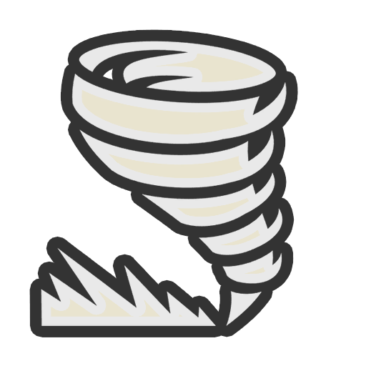 Rift Storm Invoker | Legendary | 40 | The Rift Storm starts 30 seconds sooner. Heroes take 100% reduced damage from The Rift Storm. | Legendary Relics | |
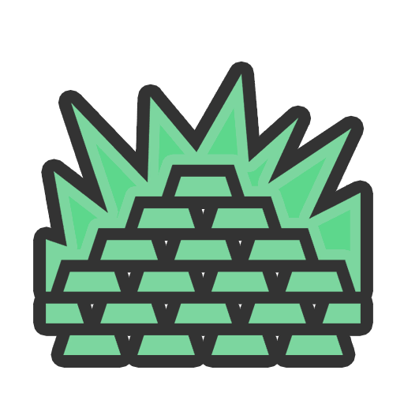 Temporal Alignment Crystal | Legendary | 40 | On Stall trigger, deal 8 damage to all enemies for each Rush you've triggered this game. On Rush trigger, give 8 lasting Shields to all Heroes for each Stall you've triggered this game. | Legendary Relics | |
| LegendaryQuest | 25 | ||||
| LegendaryQuest | 25 | ||||
| LegendaryQuest | 25 | ||||
| Temporal Mandate | LegendaryQuest | 25 | |||
| LegendaryQuest | 25 | ||||
| Legendary | 40 | At start of combat, Tanks and Vanguards gain Shields equal to 100% of their Max HP. After Stall (20 and 40), Tanks and Vanguards gain Shields equal to 1000% of their Defense. | Legendary Relics | ||
| Martial Energy Crystal | Legendary | 40 | Auto attacks by Assassins, Duelists, and Warriors gain 100 Crit. | Legendary Relics | |
| Arcane Energy Crystal | Legendary | 40 | Whenever a Mage or Mystic casts, they deal damage equal to 100% of their Magic to all enemies and apply Shields equal to 1000% of their Mana Regen to all Heroes. | Legendary Relics | |
| Heroic Capacity Expander | Legendary | 40 | Heroes can equip an additional item (Max: 5). | Legendary Relics | |
| Omnity Enforcer | Legendary | 40 | Get all 7 Crests. Crests are items which make a Hero count as having an additional class during combat. | Legendary Relics | |
| Harmony Crystal | TeamSize | 40 | Increase your team size by 1 (Max: 5). | ||
| Rapid Growth | Enemy | - | For Rush (9), enemies have 150% increased stats. | Elite 1 Enemy Relics | |
| Steady Growth | Enemy | - | After Stall (15), enemies have 40% increased stats. | Elite 1 Enemy Relics | |
| Pain | Enemy | - | Each second, Heroes take damage equal to 2.5% of their Max HP. | Elite 1 Enemy Relics | |
| Improvidence | Enemy | - | Each second, enemies heal 3% Max HP. | Elite 1 Enemy Relics | |
| Decay | Enemy | - | Heroes have 20% decreased basic stats. | Elite 1 Enemy Relics, Decay | |
| Immunity | Enemy | - | For Rush (18), enemies are immune to damage. | Elite 1 Enemy Relics | |
| Rapid Growth | Enemy | - | For Rush (10), enemies have 66% increased stats. | Elite 2 Enemy Relics | |
| Steady Growth | Enemy | - | After Stall (15), enemies have 55% increased stats. | Elite 2 Enemy Relics | |
| Pain | Enemy | - | Each second, Heroes take damage equal to 7% of their Max HP. | Elite 2 Enemy Relics | |
| Improvidence | Enemy | - | Each second, enemies heal 5% Max HP. | Elite 2 Enemy Relics | |
| Decay | Enemy | - | Heroes have 15% decreased basic stats. | Elite 2 Enemy Relics | |
| Immunity | Enemy | - | For Rush (13), enemies are immune to damage. | Elite 2 Enemy Relics | |
| Fighting Form | SingleBattleBoost | - | Heroes have 25% increased basic stats. | Fighting Form | |
| Battle Stance | SingleBattleBoost | - | Heroes have 50% increased basic stats. | Battle Stance | |
| Weakness | SingleBattleBoost | - | Heroes have 25% decreased basic stats. | Weakness | |
| Burning | SingleBattleBoost | - | At start of combat, inflict Burn on all Heroes equal to 3% of their Max HP. | Burning Forge | |
| Hunted | SingleBattleBoost | - | Heroes have -50% Defense. | Wanted | |
| Stunned | SingleBattleBoost | - | At start of combat, Heroes are Stunned for 6 seconds. | Stunned | |
| Rested | SingleBattleBoost | - | Heroes have 10% increased basic stats. | Rested | |
| Damaged | SingleBattleBoost | - | At start of combat, Heroes take damage equal to 25% of their Max HP. | Damaged | |
| Flaming | SingleBattleBoost | - | At start of combat, inflict Burn on all Heroes equal to 5% of their Max HP. | ||
| Sharpened | SingleBattleBoost | - | Heroes gain 25 Attack, 15 Attack Speed, and 20 Crit. | ||
| Hardened | SingleBattleBoost | - | Heroes gain 300 Max HP and 45 Defense. | ||
| Focused | SingleBattleBoost | - | Heroes gain 50 Magic and 4 Mana Regen. | ||
| Cost of Knowledge | SingleBattleBoost | - | Heroes have 20% decreased basic stats. | ||
| The Rift Puppy's Cry | SingleBattleBoost | - | Gain 25 additional Shards for killing the Act Boss. | ||
| The Etched Path | SingleBattleBoost | - | Get riftFuturesRelicId when this expires. | ||
| The Rift Puppy | SingleBattleBoost | - | At start of combat, Heroes take damage equal to 15% of their Max HP. | ||
| The Jagged Chasm | SingleBattleBoost | - | Heroes lose 10% basic stats. Combats rewards 10 more Shards per victory. | ||
| The Jagged Divide | SingleBattleBoost | - | Heroes lose 15% basic stats. Get shardbackBeetleRelicId when this expires. | ||
| The Fairy Ring | SingleBattleBoost | - | At start of combat, inflict Poison on all Heroes equal to 1% of their Max HP. Get woundedHawkItemId when this expires. | ||
| The Fairy Ring | SingleBattleBoost | - | Earn no Shards for combat victory. Get woundedHawkRelicId when this expires. | ||
| The Well of Temptation | SingleBattleBoost | - | Heroes gain 10% basic stats. | ||
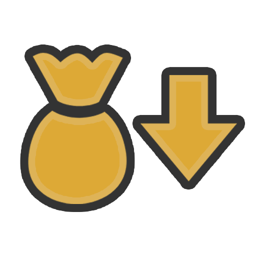 The Debtor | SingleBattleBoost | - | Earn 5 fewer Shards for combat victory. | ||
| The Debtor | SingleBattleBoost | - | Earn 15 fewer Shards for combat victory. | ||
| The Cursed Urn | SingleBattleBoost | - | Earn 10 fewer Shards for combat victory. | ||
| The Nest | SingleBattleBoost | - | Get theStingRelicId when this expires. | ||
| The Well of Temptation | SingleBattleBoost | - | Earn 5 fewer Shards for combat victory. | ||
| The Well of Temptation | SingleBattleBoost | - | Get riftFuturesItemId when this expires. | ||
| The Rift Puppy | SingleBattleBoost | - | At start of combat, Heroes take damage equal to 30% of their Max HP. | ||
| Strange Yellow Fruit | SingleBattleBoost | - | At start of combat, Heroes are Stunned for 6 seconds. Heroes gain 500 Max HP when this expires. | ||
| Single Combat | SingleBattleBoost | - | Defeat the Forest Golem in single combat to gain 20 Shards. To swap Heroes, drag a Hero from the <b>Reserves</b> on top of your current one. | ||
| Single Combat | SingleBattleBoost | - | Defeat the Forest Golem in single combat to get singleCombatRelicId. To swap Heroes, drag a Hero from the <b>Reserves</b> on top of your current one. | ||
| Single Combat | SingleBattleBoost | - | Defeat the Forest Golem in single combat to get singleCombatItemId. To swap Heroes, drag a Hero from the <b>Reserves</b> on top of your current one. | ||
| Endurance | SingleBattleBoost | - | Survive for 30 seconds to gain 10 Shards. Enemies in this combat are immune to damage. | ||
| Endurance | SingleBattleBoost | - | Survive for 40 seconds to gain 20 Shards. Enemies in this combat are immune to damage. | ||
| Endurance | SingleBattleBoost | - | Survive for 50 seconds to gain 30 Shards. Enemies in this combat are immune to damage. | ||
| Demolition | SingleBattleBoost | - | Kill the Turtle in under 20 seconds to gain 10 Shards. | ||
| Demolition | SingleBattleBoost | - | Kill the Turtle in under 20 seconds to gain 20 Shards. | ||
| Demolition | SingleBattleBoost | - | Kill the Turtle in under 20 seconds to gain 30 Shards. | ||
| Rematch | SingleBattleBoost | - | Defeat the boss in 1v1 combat to gain bossRelicId. The Hero has 10% reduced basic stats. | ||
| Rematch | SingleBattleBoost | - | Defeat the boss in under 20 seconds to gain bossRelicId. | ||
| Rematch | SingleBattleBoost | - | Defeat the boss to gain bossRelicId. Heroes have 50% reduced basic stats. | ||
| Starter Bundle | Unique | - | Gain a random common item, a random common relic, and 3 Shards. | Starting Pool | |
| Bossy | Unique | - | Starting Pool | ||
| Shard Pouch | Unique | - | Gain 12 Shards. | Starting Pool | |
| Item Windfall | Unique | - | Get 3 random common items. | Starting Pool | |
| Mystery Charm | Unique | - | Get a random rare relic. | Starting Pool | |
| Unique | - | Get two random items which make a Hero count as having an additional class. | Starting Pool | ||
| Unique | - | The shop shows an additional relic. | Starting Pool | ||
| Item Bazaar | Unique | - | Items cost 2 fewer Shards. | Starting Pool | |
| Survivor Charm | Unique | - | Gain 1 extra Shard per surviving Hero at end of combat. | Starting Pool | |
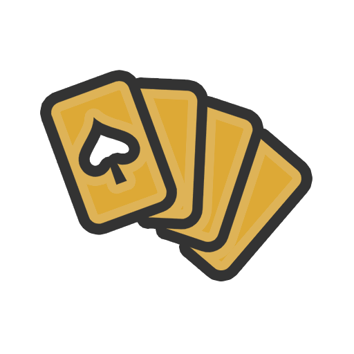 All In | Unique | - | Gain 45 Shards. Start with Emergency Rewind unavailable. | Starting Pool | |
| DummyRelicDontUse | Unique | - | Dummy Relic! Use Relic_3037. | yes | |
| Unique | - | Increase max team size by 1 (Max: 5). Heroes have 1 fewer item slot (Min: 1). | Starting Pool | ||
| Fast Track | Unique | - | Instantly rank up the above Hero. Start with 10 fewer Shards. | Starting Pool | |
| Vampirism | Unique | - | Heroes gain 10 Omnivamp. | Starting Pool | |
| Stability System | Unique | - | Emergency Rewind starts with 25 more Shards. | Starting Pool | |
| Quality over Quantity | Unique | - | Heroes can equip two additional items (Max: 6). Max team size is decreased by 1. | Starting Pool | |
| Legacy Charm | Unique | - | Heroes gain 1d1% basic stats. Every 2 combat victories, permanently increase the amount of basic stats by 1%. | Starting Pool | |
| Unique | - | Get an item which benefits Warriors. | Starting Pool | ||
| Unique | - | Get an item which benefits Tanks. | Starting Pool | ||
| Unique | - | Get an item which benefits Vanguards. | Starting Pool | ||
| Unique | - | Get an item which benefits Assassins. | Starting Pool | ||
| Unique | - | Get an item which benefits Duelists. | Starting Pool | ||
| Unique | - | Get an item which benefits Mystics. | Starting Pool | ||
| Mage Equipment | Unique | - | Get an item which benefits Mages. | Starting Pool | |
| Unique | - | Get an item which makes a Hero count as a Warrior during combat. | Starting Pool | ||
| Unique | - | Get an item which makes a Hero count as a Tank during combat. | Starting Pool | ||
| Unique | - | Get an item which makes a Hero count as a Vanguard during combat. | Starting Pool | ||
| Unique | - | Get an item which makes a Hero count as an Assassin during combat. | Starting Pool | ||
| Unique | - | Get an item which makes a Hero count as a Duelist during combat. | Starting Pool | ||
| Unique | - | Get an item which makes a Hero count as a Mystic during combat. | Starting Pool | ||
| Mage Crest | Unique | - | Get an item which makes a Hero count as a Mage during combat. | Starting Pool | |
| Unique | - | Get a random rare item that gives Attack. | Starting Pool | ||
| Defense Parcel | Unique | - | Get a random rare item that gives Defense. | Starting Pool | |
| Unique | - | Get a random rare item that gives Max HP. | Starting Pool | ||
| Unique | - | Get a random rare item that gives Crit. | Starting Pool | ||
| Unique | - | Get a random rare item that gives Attack Speed. | Starting Pool | ||
| Unique | - | Get a random rare item that gives Mana Regen. | Starting Pool | ||
| Unique | - | Get a random rare item that gives Magic. | Starting Pool | ||
| Demon's Fury | ActBoss | - | Whenever an enemy reaches 50% remaining Max HP, it gains 20 Attack Speed and Shields equal to 10% of its Max HP. | ||
| Hydra's Healing | ActBoss | - | At start of combat, enemies gain 1 HP/S per 150 Max HP they have. | ||
| Fire Dragon's Flame | ActBoss | - | At start of combat, inflict act2ActBossStacks Burn on all Heroes. On combat victory, permanently increase the amount of Burn this inflicts by 4. | ||
| Frost Dragon's Chill | ActBoss | - | At start of combat, inflict act2ActBossStacks Frost on all Heroes. On combat victory, permanently increase the amount of Frost this inflicts by 3. | ||
| Poison Dragon's Venom | ActBoss | - | At start of combat, inflict act2ActBossStacks Poison on all Heroes. On combat victory, permanently increase the amount of Poison this inflicts by 2. |
Warrior's Endurance Banner Relic_504
Unique · cost - · Warrior's Rush abilities last 3 seconds longer.
Warrior's Mending Banner Relic_509
Unique · cost - · Whenever a Warrior Crits, they heal equal to 50% of their Attack.
Warrior's Bravery Banner Relic_510
Unique · cost - · Whenever a Warrior Crits, they deal bonus damage equal to 100% of their Attack.
Warrior's Rally Banner Relic_511
Unique · cost - · Rush (10): Warriors gain +50% Attack.
Warrior's Aegis Banner Relic_513
Unique · cost - · At start of combat, Warriors gain a lasting Shield equal to 500% of their Attack.
Tank's Readiness Banner Relic_519
Unique · cost - · Tank's Stall abilities trigger 8 seconds faster.
Tank's Patience Banner Relic_521
Unique · cost - · After Stall (15), Tanks permanently gain 8 Defense.
Tank's Poisonplate Banner Relic_526
Unique · cost - · Whenever a Tank is auto attacked, they apply 2 Poison to the attacker.
Tank's Frostplate Banner Relic_527
Unique · cost - · Whenever a Tank is auto attacked, they apply 2 Frost to the attacker.
Tank's Resilience Banner Relic_530
Unique · cost - · Whenever a Tank is auto attacked, they gain 2 Defense.
 Vanguard's Endurance Banner Relic_534
Vanguard's Endurance Banner Relic_534
Unique · cost - · Vanguard's Rush abilities last 3 seconds longer.
Vanguard's Aegis Banner Relic_537
Unique · cost - · At start of combat, Vanguards gain Shields equal to 25% of their Max HP.
Vanguard's Rally Banner Relic_538
Unique · cost - · For Rush (10), Vanguards gain 1 Attack and 1 Defense per 25 Max HP.
Vanguard's Flameplate Banner Relic_541
Unique · cost - · Whenever a Vanguard is auto attacked, they inflict 4 Burn on the attacker.
Vanguard's Flamefists Banner Relic_542
Unique · cost - · Whenever a Vanguard auto attacks, they inflict 4 Burn on their target.
Assassin's Smokescreen Banner Relic_548
Unique · cost - · Assassins gain Stealth for 3 seconds the first time they go below 33% Max HP each combat.
Assassin's Endurance Banner Relic_549
Unique · cost - · Assassin's Rush abilities last 3 seconds longer.
Assassin's Greed Banner Relic_550
Unique · cost - · Assassins gain 1 Attack and 1 Magic per 5 Shards you've generated this game.
Assassin's Patience Banner Relic_551
Unique · cost - · Whenever an Assassin Crits, they permanently gain 1 Attack and 1 Magic.
Assassin's Payday Banner Relic_556
Unique · cost - · Whenever an Assassin kills an enemy, gain 4 Shards.
Duelist's Precision Banner Relic_564
Unique · cost - · Duelists gain 1 Crit per 5 Shards you've generated this game.
Duelist's Toxin Banner Relic_566
Unique · cost - · Whenever a Duelist auto attacks, they inflict 2 Poison on their target.
Duelist's Chill Banner Relic_567
Unique · cost - · Whenever a Duelist auto attacks, they inflict 2 Frost on their target.
Duelist's Flame Banner Relic_568
Unique · cost - · Whenever a Duelist auto attacks, they inflict 3 Burn on their target.
Duelist's Outbreak Banner Relic_571
Unique · cost - · Whenever a Duelist auto attacks, they deal 20 bonus damage per type of Debuff on their target.
Mystic's Payday Banner Relic_581
Unique · cost - · Every 5 times a Mystic casts, gain 1 Shard.
Mystic's Prosperity Banner Relic_582
Unique · cost - · Whenever a Mystic casts, they gain Magic equal to 50% of their Mana Regen.
Mystic's Barrier Banner Relic_585
Unique · cost - · Whenever a Mystic casts, they Shield the lowest-health Hero equal to 500% of their Mana Regen.
Mystic's Outbreak Banner Relic_586
Unique · cost - · Whenever a Mystic casts, they gain 2 Magic per type of Debuff on all enemies.
Mystic's Protection Banner Relic_589
Unique · cost - · Whenever a Mystic casts, they Shield the nearest Hero equal to the total number of Debuff stacks on all enemies.
Mage's Elemental Banner Relic_595
Unique · cost - · Whenever a Mage casts, all enemies in their range take 6 damage per Frost and 3 damage per Burn they have.
Mage's Inferno Banner Relic_596
Unique · cost - · Whenever a Mage casts, they inflict Burn on their target equal to 150% of the Mana spent.
Mage's Frostbite Banner Relic_597
Unique · cost - · Whenever a Mage casts, they inflict Frost on their target equal to 66% of the Mana spent.
Mage's Enlightenment Banner Relic_601
Unique · cost - · After Stall (15), Mages permanently gain 10 Magic.
Mage's Serenity Banner Relic_604
Unique · cost - · After Stall (15 and 30), Mages gain 100 Mana.
Warrior's Precise Reflection Relic_621
Unique · cost - · Warriors gain 25 Attack and 15 Crit.
Warrior's Swift Reflection Relic_622
Unique · cost - · Warriors gain 25 Attack and 20 Attack Speed.
Tank's Enchanted Reflection Relic_623
Unique · cost - · Tanks gain 30 Defense and 25 Magic.
Tank's Vital Reflection Relic_624
Unique · cost - · Tanks gain 30 Defense and 200 Max HP.
Vanguard's Combative Reflection Relic_625
Unique · cost - · Vanguards gain 200 Max HP and 25 Attack.
Vanguard's Plated Reflection Relic_626
Unique · cost - · Vanguards gain 200 Max HP and 30 Defense.
Assassin's Combative Reflection Relic_627
Unique · cost - · Assassins gain 15 Crit and 25 Attack.
Assassin's Enchanted Reflection Relic_628
Unique · cost - · Assassins gain 15 Crit and 25 Magic.
Duelist's Precise Reflection Relic_629
Unique · cost - · Duelists gain 20 Attack Speed and 15 Crit.
Duelist's Combative Reflection Relic_630
Unique · cost - · Duelists gain 20 Attack Speed and 25 Attack.
Mystic's Enchanted Reflection Relic_631
Unique · cost - · Mystics gain 4 Mana Regen and 25 Magic.
Mystic's Vital Reflection Relic_632
Unique · cost - · Mystics gain 4 Mana Regen and 200 Max HP.
Mage's Precise Reflection Relic_633
Unique · cost - · Mages gain 25 Magic and 15 Crit.
Mage's Flowing Reflection Relic_634
Unique · cost - · Mages gain 25 Magic and 4 Mana Regen.
Poison Bauble Relic_700
Unique · cost - · At start of combat, inflict 10 Poison on all enemies.
Poison Accumulator Relic_701
Unique · cost - ·
Quest: Inflict 50 Poison. → Reward: Gain 15 Shards.
QuestEffect(Trigger=OnStatusStacksApplied, AttachmentType=105, AttachmentClassId=-, TriggerIncrement=1, EffectInterval=0, Keyword=0, RushDuration=0, StallDuration=0, ProjectileType=0, requiredProgress=50, condition=TriggerIsOfStatusCondition(status=3), questAction=1, Rewards=[EffectsReward(RewardEffects=[OnAcquire → Player: GainShardsAction(Amount=15)])])
Frost Bauble Relic_702
Unique · cost - · At start of combat, inflict 10 Frost on all enemies.
Frost Accumulator Relic_703
Unique · cost - ·
Quest: Inflict 100 Frost. → Reward: Gain 15 Shards.
QuestEffect(Trigger=OnStatusStacksApplied, AttachmentType=105, AttachmentClassId=-, TriggerIncrement=1, EffectInterval=0, Keyword=0, RushDuration=0, StallDuration=0, ProjectileType=0, requiredProgress=100, condition=TriggerIsOfStatusCondition(status=2), questAction=1, Rewards=[EffectsReward(RewardEffects=[OnAcquire → Player: GainShardsAction(Amount=15)])])
Burn Bauble Relic_704
Unique · cost - · At start of combat, inflict 20 Burn on all enemies.
Burn Accumulator Relic_705
Unique · cost - ·
Quest: Inflict 150 Burn. → Reward: Gain 15 Shards.
QuestEffect(Trigger=OnStatusStacksApplied, AttachmentType=105, AttachmentClassId=-, TriggerIncrement=1, EffectInterval=0, Keyword=0, RushDuration=0, StallDuration=0, ProjectileType=0, requiredProgress=150, condition=TriggerIsOfStatusCondition(status=1), questAction=1, Rewards=[EffectsReward(RewardEffects=[OnAcquire → Player: GainShardsAction(Amount=15)])])
Plague Bauble Relic_706
Unique · cost - · At start of combat, inflict 3 Poison, 6 Frost, and 9 Burn on all enemies.
Plague Collector Relic_707
Unique · cost - ·
Quest: Inflict 250 Debuffs. → Reward: Gain 15 Shards.
QuestEffect(Trigger=OnStatusStacksApplied, AttachmentType=105, AttachmentClassId=-, TriggerIncrement=1, EffectInterval=0, Keyword=0, RushDuration=0, StallDuration=0, ProjectileType=0, requiredProgress=250, condition=TriggerIsDebuffCondition(), questAction=1, Rewards=[EffectsReward(RewardEffects=[OnAcquire → Player: GainShardsAction(Amount=15)])])
Shield Fluctuator Relic_708
Unique · cost - · Heroes gain 20 Crit and 5 Mana Regen while Shielded.
 Shield Bauble Relic_709
Shield Bauble Relic_709
Unique · cost - · At start of combat, heroes gain 250 lasting Shields.
Shield Accumulator Relic_710
Unique · cost - ·
Quest: Apply 1250 Shields. → Reward: Gain 15 Shards.
QuestEffect(Trigger=OnStatusStacksApplied, AttachmentType=103, AttachmentClassId=-, TriggerIncrement=1, EffectInterval=0, Keyword=0, RushDuration=0, StallDuration=0, ProjectileType=0, requiredProgress=1250, condition=TriggerIsOfStatusCondition(status=45), questAction=1, Rewards=[EffectsReward(RewardEffects=[OnAcquire → Player: GainShardsAction(Amount=15)])])
Acceleration Fluctuator Relic_711
Unique · cost - · On Rush trigger, give Heroes 10 Attack Speed and 10 Attack.
Acceleration Resonator Relic_712
Unique · cost - · On Rush trigger, Heroes gain 200 Shields.
Acceleration Accumulator Relic_713
Unique · cost - ·
Quest: Trigger Rush 2 times. → Reward: Rush abilities last 1 second longer.
QuestEffect(Trigger=OnRushStart, AttachmentType=0, AttachmentClassId=-, TriggerIncrement=1, EffectInterval=0, Keyword=0, RushDuration=0, StallDuration=0, ProjectileType=0, requiredProgress=2, condition=NoQuestCondition(), questAction=0, Rewards=[EffectsReward(RewardEffects=[PriorityModularEffect Constant → Player: IncreasePlayerRushDurationAction(Duration=1)])])
Deceleration Fluctuator Relic_714
Unique · cost - · On Stall Trigger: Heroes gain 10 Attack Speed and 10 Magic.
Deceleration Resonator Relic_715
Unique · cost - · On Stall trigger, Heroes heal 250.
Deceleration Accumulator Relic_716
Unique · cost - ·
Quest: Trigger Stall 2 times. → Reward: Stall abilities trigger 2 seconds faster.
QuestEffect(Trigger=OnStallStart, AttachmentType=0, AttachmentClassId=-, TriggerIncrement=1, EffectInterval=0, Keyword=0, RushDuration=0, StallDuration=0, ProjectileType=0, requiredProgress=2, condition=NoQuestCondition(), questAction=0, Rewards=[EffectsReward(RewardEffects=[PriorityModularEffect Constant → Player: ReducePlayerStallDurationAction(Duration=3)])])
Shard Fluctuator Relic_717
Unique · cost - · On Shards generated, deal 500 damage to all enemies.
Shard Resonator Relic_718
Unique · cost - · On Shards generated, Heroes gain 400 Shields.
Shard Accumulator Relic_719
Unique · cost - ·
Quest: Generate 20 Shards. → Reward: At start of combat, gain 2 Shards.
QuestEffect(Trigger=OnShardsGenerated, AttachmentType=0, AttachmentClassId=-, TriggerIncrement=1, EffectInterval=0, Keyword=0, RushDuration=0, StallDuration=0, ProjectileType=0, requiredProgress=20, condition=TriggerValueIsNotNegativeCondition(), questAction=1, Rewards=[EffectsReward(RewardEffects=[PriorityModularEffect OnCombatStart → Player: GainShardsAction(Amount=2)])])
 Starter Kit: Instant Shards Relic_720
Starter Kit: Instant Shards Relic_720
Unique · cost - · Gain 7 Shards.
 Starter Kit: Temporary Shard Boost Relic_723
Starter Kit: Temporary Shard Boost Relic_723
Unique · cost - · For Combat #2 and Combat #3, earn 2 extra Shards per surviving Hero at end of combat.
Starter Kit: Sustained Shard Boost Relic_724
Unique · cost - · Until the Act Boss, earn 1 extra Shard per surviving Hero at end of combat.
Starter Kit: Instant Rare Attack Item Relic_725
Unique · cost - · Get a rare item which gives Attack to the holder.
Starter Kit: Instant Rare Max HP Item Relic_726
Unique · cost - · Get a rare item which gives Max HP to the holder.
Starter Kit: Instant Rare Defense Item Relic_727
Unique · cost - · Get a rare item which gives Defense to the holder.
Starter Kit: Instant Rare Crit Item Relic_728
Unique · cost - · Get a rare item which gives Crit to the holder.
Starter Kit: Instant Rare Attack Speed Item Relic_729
Unique · cost - · Get a rare item which gives Attack Speed to the holder.
Starter Kit: Instant Rare Mana Regen Item Relic_730
Unique · cost - · Get a rare item which gives Mana Regen to the holder.
Starter Kit: Instant Rare Magic Item Relic_731
Unique · cost - · Get a rare item which gives Magic to the holder.
Starter Kit: Temporary Item Discount Relic_734
Unique · cost - · Until Combat #4, items cost 2 less.
Starter Kit: Instant Attack Boost Relic_736
Unique · cost - · A Hero permanently gained 35 Attack.
Starter Kit: Instant Max HP Boost Relic_737
Unique · cost - · A Hero permanently gained 300 Max HP.
Starter Kit: Instant Defense Boost Relic_738
Unique · cost - · A Hero permanently gained 45 Defense.
Starter Kit: Instant Crit Boost Relic_739
Unique · cost - · A Hero permanently gained 20 Crit.
Starter Kit: Instant Attack Speed Boost Relic_740
Unique · cost - · A Hero permanently gained 30 Attack Speed.
Starter Kit: Instant Mana Regen Boost Relic_741
Unique · cost - · A Hero permanently gained 6 Mana Regen.
Starter Kit: Instant Magic Boost Relic_742
Unique · cost - · A Hero permanently gained 35 Magic.
Starter Kit: Temporary Attack Growth Relic_757
Unique · cost - · At the start of Combat #2 and Combat #3, Heroes permanently gain 12 Attack.
Starter Kit: Temporary Max HP Growth Relic_758
Unique · cost - · At the start of Combat #2 and Combat #3, Heroes permanently gain 100 Max HP.
Starter Kit: Temporary Defense Growth Relic_759
Unique · cost - · At the start of Combat #2 and Combat #3, Heroes permanently gain 15 Defense.
Starter Kit: Temporary Crit Growth Relic_760
Unique · cost - · At the start of Combat #2 and Combat #3, Heroes permanently gain 7 Crit.
Starter Kit: Temporary Attack Speed Growth Relic_761
Unique · cost - · At the start of Combat #2 and Combat #3, Heroes permanently gain 10 Attack Speed.
Starter Kit: Temporary Mana Regen Growth Relic_762
Unique · cost - · At the start of Combat #2 and Combat #3, Heroes permanently gain 2 Mana Regen.
Starter Kit: Temporary Magic Growth Relic_763
Unique · cost - · At the start of Combat #2 and Combat #3, Heroes permanently gain 12 Magic.
Starter Kit: Sustained Attack Relic_764
Unique · cost - · Until the Act Boss, Heroes gain 40 Attack.
Starter Kit: Sustained Item Expansion Relic_771
Unique · cost - · Until the Act Boss, Heroes can equip an additional item (Max: 6).
Starter Kit: Sustained Max HP Relic_777
Unique · cost - · Until the Act Boss, Heroes gain 300 Max HP.
Starter Kit: Sustained Defense Relic_778
Unique · cost - · Until the Act Boss, Heroes gain 45 Defense.
Starter Kit: Sustained Crit Relic_779
Unique · cost - · Until the Act Boss, Heroes gain 25 Crit.
Starter Kit: Sustained Attack Speed Relic_780
Unique · cost - · Until the Act Boss, Heroes gain 25 Attack Speed.
Starter Kit: Sustained Mana Regen Relic_781
Unique · cost - · Until the Act Boss, Heroes gain 6 Mana Regen.
Starter Kit: Sustained Magic Relic_782
Unique · cost - · Until the Act Boss, Heroes gain 40 Magic
 Strange Blue Fruit: Attack Drained Relic_783
Strange Blue Fruit: Attack Drained Relic_783
Unique · cost - · Heroes lose 12 Attack.
 Strange Blue Fruit: Max HP Drained Relic_784
Strange Blue Fruit: Max HP Drained Relic_784
Unique · cost - · Heroes lose 100 Max HP.
Strange Blue Fruit: Defense Drained Relic_785
Unique · cost - · Heroes lose 15 Defense.
 Strange Blue Fruit: Crit Drained Relic_786
Strange Blue Fruit: Crit Drained Relic_786
Unique · cost - · Heroes lose 7 Crit.
 Strange Blue Fruit: Attack Speed Drained Relic_787
Strange Blue Fruit: Attack Speed Drained Relic_787
Unique · cost - · Heroes lose 10 Attack Speed.
 Strange Blue Fruit: Mana Regen Drained Relic_788
Strange Blue Fruit: Mana Regen Drained Relic_788
Unique · cost - · Heroes lose 2 Mana Regen.
Strange Blue Fruit: Magic Drained Relic_789
Unique · cost - · Heroes lose 12 Magic
Strange Red Fruit: Attack Boost Relic_790
Unique · cost - · Heroes gain 25 Attack.
Strange Red Fruit: Max HP Boost Relic_791
Unique · cost - · Heroes gain 200 Max HP.
Strange Red Fruit: Defense Boost Relic_792
Unique · cost - · Heroes gain 30 Defense.
Strange Red Fruit: Crit Boost Relic_793
Unique · cost - · Heroes gain 15 Crit.
Strange Red Fruit: Attack Speed Boost Relic_794
Unique · cost - · Heroes gain 20 Attack Speed.
Strange Red Fruit: Mana Regen Boost Relic_795
Unique · cost - · Heroes gain 4 Mana Regen.
Strange Red Fruit: Magic Boost Relic_796
Unique · cost - · Heroes gain 25 Magic.
Power of the Well Relic_797
Unique · cost - · Heroes gain 10% basic stats.
Debt Relic_798
Unique · cost - · At start of combat, Heroes take damage equal to 10% of their Max HP.
Strange Yellow Fruit Relic_799
Unique · cost - · Heroes gain 500 Max HP.
The Red Rift Relic_900
Unique · cost - · Enemies gain 5% basic stats.
The Act 2 Boss resists Frost, reducing its effects by 50%.
Warrior's Medallion Relic_1000
Common · cost 10 · Warriors gain 25 Attack.
Tank's Medallion Relic_1001
Common · cost 10 · Tanks gain 30 Defense.
Vanguard's Medallion Relic_1002
Common · cost 10 · Vanguards gain 200 Max HP.
Assassin's Medallion Relic_1003
Common · cost 10 · Assassins gain 15 Crit.
Duelist's Medallion Relic_1004
Common · cost 10 · Duelists gain 20 Attack Speed.
Mystic's Medallion Relic_1005
Common · cost 10 · Mystics gain 4 Mana Regen.
Mage's Medallion Relic_1006
Common · cost 10 · Mages gain 25 Magic.
Poison Bloom Relic_1007
Common · cost 10 · After Stall (10 and 20), inflict 10 Poison on all enemies.
Frost Surge Relic_1008
Common · cost 10 · At start of combat, inflict 15 Frost on all enemies.
Fire Starter Relic_1009
Common · cost 10 · Each second for Rush (10), inflict 3 Burn on all enemies.
Shard Lattice Relic_1010
Common · cost 10 · On combat victory, gain 3 Shards.
Deceleration Lattice Relic_1011
Common · cost 10 · After Stall (20), Heroes gain 15 HP/S.
Acceleration Lattice Relic_1012
Common · cost 10 · For Rush (10), Heroes gain 25 HP/S.
Precision Lattice Relic_1013
Common · cost 10 · Each Hero's first attack against each enemy gains 250 Crit.
Shield Generator Relic_1014
Common · cost 10 · At start of combat, Heroes gain 400 lasting Shields.
Plague Generator Relic_1015
Common · cost 10 · At start of combat, inflict 5 Poison, 10 Frost, and 15 Burn on all enemies.
Frontline Defender Relic_1016
Common · cost 10 · At start of combat, Heroes in the front row gain 100 Max HP and 15 Defense.
Backline Aggressor Relic_1017
Common · cost 10 · At start of combat, Heroes in the back row gain 10 Attack Speed and 15 Crit.
Poison Vessel Relic_1018
Common · cost 10 ·
Quest: Inflict 100 Poison. → Reward: Heroes gain 20 Attack Speed and 15 Crit.
QuestEffect(Trigger=OnStatusStacksApplied, AttachmentType=105, AttachmentClassId=-, TriggerIncrement=1, EffectInterval=0, Keyword=0, RushDuration=0, StallDuration=0, ProjectileType=0, requiredProgress=100, condition=TriggerIsOfStatusCondition(status=3), questAction=1, Rewards=[EffectsReward(RewardEffects=[Constant → AllHeroes: ModifyStatAction(StatType=AttackSpeed, Value=20); ModifyStatAction(StatType=Crit, Value=15)])])
Basic Differentiator Relic_1019
Common · cost 10 · Shop rerolls cost 1 less.
Frost Vessel Relic_1020
Common · cost 10 ·
Quest: Inflict 200 Frost. → Reward: Heroes gain 30 Defense and 3 Mana Regen.
QuestEffect(Trigger=OnStatusStacksApplied, AttachmentType=105, AttachmentClassId=-, TriggerIncrement=1, EffectInterval=0, Keyword=0, RushDuration=0, StallDuration=0, ProjectileType=0, requiredProgress=200, condition=TriggerIsOfStatusCondition(status=2), questAction=1, Rewards=[EffectsReward(RewardEffects=[Constant → AllHeroes: ModifyStatAction(StatType=Defense, Value=30); ModifyStatAction(StatType=ManaRegen, Value=3)])])
Burn Vessel Relic_1021
Common · cost 10 ·
Quest: Inflict 300 Burn. → Reward: Heroes gain 200 Max HP and 25 Attack.
QuestEffect(Trigger=OnStatusStacksApplied, AttachmentType=105, AttachmentClassId=-, TriggerIncrement=1, EffectInterval=0, Keyword=0, RushDuration=0, StallDuration=0, ProjectileType=0, requiredProgress=300, condition=TriggerIsOfStatusCondition(status=1), questAction=1, Rewards=[EffectsReward(RewardEffects=[Constant → AllHeroes: ModifyStatAction(StatType=MaxHealth, Value=200); ModifyStatAction(StatType=Attack, Value=25)])])
Shard Vessel Relic_1022
Common · cost 10 ·
Quest: Generate 15 Shards. → Reward: Heroes gain 20 Crit and 5 Omnivamp.
QuestEffect(Trigger=OnShardsGenerated, AttachmentType=0, AttachmentClassId=-, TriggerIncrement=1, EffectInterval=0, Keyword=0, RushDuration=0, StallDuration=0, ProjectileType=0, requiredProgress=15, condition=TriggerValueIsNotNegativeCondition(), questAction=1, Rewards=[EffectsReward(RewardEffects=[Constant → AllHeroes: ModifyStatAction(StatType=Crit, Value=20); ModifyStatAction(StatType=OmniVamp, Value=5)])])
Deceleration Vessel Relic_1023
Common · cost 10 ·
Quest: Trigger Stall 4 times. → Reward: Stall abilities trigger 3 seconds faster.
QuestEffect(Trigger=OnStallStart, AttachmentType=0, AttachmentClassId=-, TriggerIncrement=1, EffectInterval=0, Keyword=0, RushDuration=0, StallDuration=0, ProjectileType=0, requiredProgress=4, condition=NoQuestCondition(), questAction=0, Rewards=[EffectsReward(RewardEffects=[PriorityModularEffect Constant → Player: ReducePlayerStallDurationAction(Duration=3)])])
Acceleration Vessel Relic_1024
Common · cost 10 ·
Quest: Trigger Rush 4 times. → Reward: Rush abilities last 2 seconds longer.
QuestEffect(Trigger=OnRushStart, AttachmentType=0, AttachmentClassId=-, TriggerIncrement=1, EffectInterval=0, Keyword=0, RushDuration=0, StallDuration=0, ProjectileType=0, requiredProgress=4, condition=NoQuestCondition(), questAction=0, Rewards=[EffectsReward(RewardEffects=[PriorityModularEffect Constant → Player: IncreasePlayerRushDurationAction(Duration=2)])])
Critical Vessel Relic_1025
Common · cost 10 ·
Quest: Crit 20 times. → Reward: Heroes gain 25 Attack Speed and 5 Omnivamp.
QuestEffect(Trigger=OnGlobalCrit, AttachmentType=100, AttachmentClassId=-, TriggerIncrement=1, EffectInterval=0, Keyword=0, RushDuration=0, StallDuration=0, ProjectileType=0, requiredProgress=20, condition=NoQuestCondition(), questAction=0, Rewards=[EffectsReward(RewardEffects=[Constant → AllHeroes: ModifyStatAction(StatType=AttackSpeed, Value=25); ModifyStatAction(StatType=OmniVamp, Value=5)])])
Shield Vessel Relic_1026
Common · cost 10 ·
Quest: Apply 2500 Shields. → Reward: Heroes gain 30 Magic and 30 Attack.
QuestEffect(Trigger=OnStatusStacksApplied, AttachmentType=103, AttachmentClassId=-, TriggerIncrement=1, EffectInterval=0, Keyword=0, RushDuration=0, StallDuration=0, ProjectileType=0, requiredProgress=2500, condition=TriggerIsOfStatusCondition(status=45), questAction=1, Rewards=[EffectsReward(RewardEffects=[Constant → AllHeroes: ModifyStatAction(StatType=Magic, Value=30); ModifyStatAction(StatType=Attack, Value=30)])])
 Unity Vessel Relic_1027
Unity Vessel Relic_1027
Common · cost 10 ·
Quest: Win a combat with 3 or more Heroes of the same Class in play. → Reward: Gain 30 Shards.
QuestEffect(Trigger=OnCombatVictory, AttachmentType=0, AttachmentClassId=-, TriggerIncrement=1, EffectInterval=0, Keyword=0, RushDuration=0, StallDuration=0, ProjectileType=0, requiredProgress=1, condition=HasHeroesOfSameClassInPlayCondition(requiredCount=3), questAction=0, Rewards=[EffectsReward(RewardEffects=[OnAcquire → Player: GainShardsAction(Amount=30)])])
Divergence Vessel Relic_1028
Common · cost 10 ·
Quest: Win a combat with 3 or more Heroes in play, where no Class is shared between any two Heroes. → Reward: Gain 25 Shards.
QuestEffect(Trigger=OnCombatVictory, AttachmentType=0, AttachmentClassId=-, TriggerIncrement=1, EffectInterval=0, Keyword=0, RushDuration=0, StallDuration=0, ProjectileType=0, requiredProgress=1, condition=HasXOrMoreHeroesOfUniqueClassInPlayCondition(minHeroCount=3), questAction=0, Rewards=[EffectsReward(RewardEffects=[OnAcquire → Player: GainShardsAction(Amount=25)])])
 Victory Vessel Relic_1029
Victory Vessel Relic_1029
Common · cost 10 ·
Quest: Win 3 combats. → Reward: Gain 25 Shards.
QuestEffect(Trigger=OnCombatVictory, AttachmentType=0, AttachmentClassId=-, TriggerIncrement=1, EffectInterval=0, Keyword=0, RushDuration=0, StallDuration=0, ProjectileType=0, requiredProgress=3, condition=NoQuestCondition(), questAction=0, Rewards=[EffectsReward(RewardEffects=[OnAcquire → Player: GainShardsAction(Amount=25)])])
Warrior's Memento Relic_2000
Rare · cost 20 · For each Warrior in combat, Rush abilities last 2 seconds longer.
Warrior's Emblem Relic_2001
Rare · cost 20 · If there is a Warrior in combat, your Hero's auto attacks gain 50 Crit.
Tank's Memento Relic_2002
Rare · cost 20 · At start of combat, inflict 25 Poison on all enemies per Tank in combat.
Tank's Emblem Relic_2003
Rare · cost 20 · Each second if there is a Tank in combat, Heroes gain 1 Defense.
Vanguard's Memento Relic_2004
Rare · cost 20 · At start of combat, inflict 45 Burn on all enemies per Vanguard in combat.
Vanguard's Emblem Relic_2005
Rare · cost 20 · Every 5 seconds if there is a Vanguard in combat, Heroes gain 150 Shields.
Assassin's Memento Relic_2006
Rare · cost 20 · At start of combat, gain 5 Shards per Assassin in combat.
Assassin's Emblem Relic_2007
Rare · cost 20 · If there is an Assassin in combat, Heroes gain Stealth for 3 seconds the first time they go below 66% Max HP each combat.
Duelist's Memento Relic_2008
Rare · cost 20 · For each Duelist in combat, Stall abilities trigger 4 seconds earlier.
Duelist's Emblem Relic_2009
Rare · cost 20 · If there is a Duelist in combat, Heroes deal 30 bonus damage with each auto attack.
Mystic's Memento Relic_2010
Rare · cost 20 · At start of combat, Heroes gain a 15% Max HP Shield per Mystic in combat.
Mystic's Emblem Relic_2011
Rare · cost 20 · If there is a Mystic in combat, Heroes gain 4 Mana Regen and 10 HP/S.
Mage's Memento Relic_2012
Rare · cost 20 · At start of combat, inflict 12 Frost on all enemies per Mage in combat.
Mage's Emblem Relic_2013
Rare · cost 20 · If there is a Mage in combat, your Hero's active abilities gain 100 Crit.
Arcane Amplifier Relic_2014
Rare · cost 20 · Mages and Mystics gain 50 Magic and 4 Mana Regen.
Martial Amplifier Relic_2015
Rare · cost 20 · Assassins, Duelists, and Warriors gain 15 Crit, 20 Attack Speed, and 25 Attack.
Defensive Amplifier Relic_2016
Rare · cost 20 · Tanks and Vanguards gain 45 Defense and 300 Max HP.
Multiclass Conduit Relic_2017
Rare · cost 20 ·
Quest: Win a combat with 4 or more combined classes in play. → Reward: Get 3 random Crest items. Crest items make a Hero count as having an additional class.
QuestEffect(Trigger=OnCombatVictory, AttachmentType=0, AttachmentClassId=-, TriggerIncrement=1, EffectInterval=0, Keyword=0, RushDuration=0, StallDuration=0, ProjectileType=0, requiredProgress=1, condition=HasXCombinedClassesInPlayCondition(requiredCombinedClassCount=4), questAction=0, Rewards=[ItemFromPoolReward(itemPoolId=Event Class-Granting Items); ItemFromPoolReward(itemPoolId=Event Class-Granting Items); ItemFromPoolReward(itemPoolId=Event Class-Granting Items)])
Deceleration Nexus Relic_2018
Rare · cost 20 · Every 2 Stall triggers, gain 1 Shard.
Deceleration Reactor Relic_2019
Rare · cost 20 · On Stall trigger, give Heroes a 10% Max HP Shield and 8 Mana.
Deceleration Conduit Relic_2020
Rare · cost 20 ·
Quest: Trigger Stall 6 times. → Reward: Stall abilities trigger 6 seconds faster.
QuestEffect(Trigger=OnStallStart, AttachmentType=0, AttachmentClassId=-, TriggerIncrement=1, EffectInterval=0, Keyword=0, RushDuration=0, StallDuration=0, ProjectileType=0, requiredProgress=6, condition=NoQuestCondition(), questAction=0, Rewards=[EffectsReward(RewardEffects=[PriorityModularEffect Constant → Player: ReducePlayerStallDurationAction(Duration=5)])])
Acceleration Nexus Relic_2021
Rare · cost 20 · Every 2 Rush triggers, gain 1 Shard.
Acceleration Reactor Relic_2022
Rare · cost 20 · On Rush trigger, give Heroes 5 Crit and 10 Attack Speed.
Acceleration Conduit Relic_2023
Rare · cost 20 ·
Quest: Trigger Rush 6 times. → Reward: Rush abilities last 3 seconds longer.
QuestEffect(Trigger=OnRushStart, AttachmentType=0, AttachmentClassId=-, TriggerIncrement=1, EffectInterval=0, Keyword=0, RushDuration=0, StallDuration=0, ProjectileType=0, requiredProgress=6, condition=NoQuestCondition(), questAction=0, Rewards=[EffectsReward(RewardEffects=[PriorityModularEffect Constant → Player: IncreasePlayerRushDurationAction(Duration=3)])])
Precision Nexus Relic_2024
Rare · cost 20 · On Crit, the Hero that Crit heals 30 and gains 3 Mana.
Precision Reactor Relic_2025
Rare · cost 20 · For Rush (10), Heroes gain 60 Crit.
Precision Conduit Relic_2026
Rare · cost 20 ·
Quest: Crit 40 times. → Reward: On Crit, reduce the target's Defense by 3.
QuestEffect(Trigger=OnGlobalCrit, AttachmentType=100, AttachmentClassId=-, TriggerIncrement=1, EffectInterval=0, Keyword=0, RushDuration=0, StallDuration=0, ProjectileType=0, requiredProgress=40, condition=NoQuestCondition(), questAction=0, Rewards=[EffectsReward(RewardEffects=[OnGlobalCrit → TriggerTarget attach=100: ModifyStatAction(StatType=Defense, Value=-3)])])
Shard Extractor Relic_2027
Rare · cost 20 · On combat victory, gain 6 Shards.
Shard Constructor Relic_2028
Rare · cost 20 · After Stall (30), gain 9 Shards.
Generation Conduit Relic_2029
Rare · cost 20 ·
Quest: Generate 25 Shards. → Reward: On Shards generated, Heroes gain 15 Crit and 500 Shields.
QuestEffect(Trigger=OnShardsGenerated, AttachmentType=0, AttachmentClassId=-, TriggerIncrement=1, EffectInterval=0, Keyword=0, RushDuration=0, StallDuration=0, ProjectileType=0, requiredProgress=25, condition=TriggerValueIsNotNegativeCondition(), questAction=1, Rewards=[EffectsReward(RewardEffects=[OnShardsGenerated → AllHeroes if IsTriggerValueOfSizeCondition(threshold=1): ModifyStatAction(StatType=Crit, Value=15); ApplyShieldAction(Amount=500, Duration=10)])])
Poison Amplifier Relic_2030
Rare · cost 20 · Whenever a Hero inflicts Poison, inflict 33% more.
Poison Catalyst Relic_2031
Rare · cost 20 · After Stall (15), whenever an enemy with Poison is auto attacked, they take damage equal to their Poison.
Poison Conduit Relic_2032
Rare · cost 20 ·
Quest: Inflict 150 Poison. → Reward: Whenever a Hero inflicts Poison, they gain 1 Magic and 1 Attack per 2 Poison inflicted.
QuestEffect(Trigger=OnStatusStacksApplied, AttachmentType=105, AttachmentClassId=-, TriggerIncrement=1, EffectInterval=0, Keyword=0, RushDuration=0, StallDuration=0, ProjectileType=0, requiredProgress=150, condition=TriggerIsOfStatusCondition(status=3), questAction=1, Rewards=[EffectsReward(RewardEffects=[OnStatusStacksApplied → TriggerSource attach=100 if IsTriggerOfStatusCondition(status=3): ModifyStatByTriggerValuePerIncrementAction(StatType=Attack, Increment=2); ModifyStatByTriggerValuePerIncrementAction(StatType=Magic, Increment=2)])])
Frost Amplifier Relic_2033
Rare · cost 20 · Whenever a Hero inflicts Frost, inflict 33% more.
Frost Catalyst Relic_2034
Rare · cost 20 · After Stall (15, 30, and 45), all enemies receive damage equal to 5 times the amount of Frost they have.
Frost Conduit Relic_2035
Rare · cost 20 ·
Quest: Inflict 400 Frost. → Reward: Whenever a Hero inflicts Frost, they gain 1 Magic and 1 Attack per 4 Frost inflicted.
QuestEffect(Trigger=OnStatusStacksApplied, AttachmentType=105, AttachmentClassId=-, TriggerIncrement=1, EffectInterval=0, Keyword=0, RushDuration=0, StallDuration=0, ProjectileType=0, requiredProgress=400, condition=TriggerIsOfStatusCondition(status=2), questAction=1, Rewards=[EffectsReward(RewardEffects=[OnStatusStacksApplied → TriggerSource attach=100 if IsTriggerOfStatusCondition(status=2): ModifyStatByTriggerValuePerIncrementAction(StatType=Attack, Increment=4); ModifyStatByTriggerValuePerIncrementAction(StatType=Magic, Increment=4)])])
Burn Amplifier Relic_2036
Rare · cost 20 · Whenever a Hero inflicts Burn, inflict 33% more.
Burn Catalyst Relic_2037
Rare · cost 20 · For Rush (15), enemies receive 50% more Burn damage.
Burn Conduit Relic_2038
Rare · cost 20 ·
Quest: Inflict 500 Burn. → Reward: Whenever a Hero inflicts Burn, they gain 1 Magic and 1 Attack per 4 Burn inflicted.
QuestEffect(Trigger=OnStatusStacksApplied, AttachmentType=105, AttachmentClassId=-, TriggerIncrement=1, EffectInterval=0, Keyword=0, RushDuration=0, StallDuration=0, ProjectileType=0, requiredProgress=500, condition=TriggerIsOfStatusCondition(status=1), questAction=1, Rewards=[EffectsReward(RewardEffects=[OnStatusStacksApplied → TriggerSource attach=100 if IsTriggerOfStatusCondition(status=1): ModifyStatByTriggerValuePerIncrementAction(StatType=Attack, Increment=4); ModifyStatByTriggerValuePerIncrementAction(StatType=Magic, Increment=4)])])
Plague Harvester Relic_2039
Rare · cost 20 · After Stall (15), Heroes gain 1 Defense and 1 Magic per 25 Debuffs on all enemies.
Plague Amplifier Relic_2040
Rare · cost 20 · For Rush (12), if an enemy would gain a Debuff they gain 1 more.
Plague Conduit Relic_2041
Rare · cost 20 ·
Quest: Inflict 750 Debuffs. → Reward: Gain 30 Shards.
QuestEffect(Trigger=OnStatusStacksApplied, AttachmentType=105, AttachmentClassId=-, TriggerIncrement=1, EffectInterval=0, Keyword=0, RushDuration=0, StallDuration=0, ProjectileType=0, requiredProgress=750, condition=TriggerIsDebuffCondition(), questAction=1, Rewards=[EffectsReward(RewardEffects=[OnAcquire → Player: GainShardsAction(Amount=30)])])
Shield Repriser Relic_2042
Rare · cost 20 · Whenever an enemy damages a Hero's Shields, deal 100% of the damage back to the source.
Shield Bastion Relic_2043
Rare · cost 20 · After Stall (15), Heroes gain a lasting 33% Max HP Shield.
Shield Conduit Relic_2044
Rare · cost 20 ·
Quest: Apply 7500 Shields. → Reward: Heroes gain 100 Attack and 100 Magic while Shielded.
QuestEffect(Trigger=OnStatusStacksApplied, AttachmentType=103, AttachmentClassId=-, TriggerIncrement=1, EffectInterval=0, Keyword=0, RushDuration=0, StallDuration=0, ProjectileType=0, requiredProgress=7500, condition=TriggerIsOfStatusCondition(status=45), questAction=1, Rewards=[EffectsReward(RewardEffects=[PerFrameEvaluation → AllHeroes attach=100 if DoesEffectTargetHaveStatusCondition(Status=Shield): ModifyStatAction(StatType=Attack, Value=100); ModifyStatAction(StatType=Magic, Value=100)])])
Combative Codex Relic_2045
Rare · cost 20 · Heroes gain 1d9 Attack.
On combat victory, permanently increase the Attack gained by 6.
Enchanted Codex Relic_2046
Rare · cost 20 · Heroes gain 1d9 Magic.
On combat victory, permanently increase the Magic gained by 6.
Vampiric Codex Relic_2047
Rare · cost 20 · Heroes gain 1d3 Omnivamp.
On combat victory, permanently increase the Omnivamp gained by 2.
Vital Codex Relic_2048
Rare · cost 20 · Heroes gain 1d75 Max HP.
On combat victory, permanently increase the Max HP gained by 50.
Plated Codex Relic_2049
Rare · cost 20 · Heroes gain 1d15 Defense.
On combat victory, permanently increase the Defense gained by 10.
Precise Codex Relic_2050
Rare · cost 20 · Heroes gain 1d6 Crit.
On combat victory, permanently increase the Crit gained by 4.
Swift Codex Relic_2051
Rare · cost 20 · Heroes gain 1d8 Attack Speed.
On combat victory, permanently increase the Attack Speed gained by 5.
Frontline Embiggener Relic_2052
Rare · cost 20 · At start of combat, Heroes in the front row gain 400 Max HP and grow in size.
Frontline Barricader Relic_2053
Rare · cost 20 · At start of combat, Heroes in the front row gain 60 Defense and grow in size.
Backline Sharpener Relic_2054
Rare · cost 20 · At start of combat, Heroes in the back row gain 25 Crit and increased move speed.
Backline Quickener Relic_2055
Rare · cost 20 · At start of combat, Heroes in the back row gain 40 Attack Speed and increased move speed.
Advanced Differentiator Relic_2056
Rare · cost 20 · Shop rerolls cost 2 less.
Protective Differentiator Relic_2057
Rare · cost 20 · After Stall (15 and 30), give Heroes a lasting 1% Max HP Shield for each time you've rerolled the shop this game.
Violence Conduit Relic_2058
Rare · cost 20 ·
Quest: Auto attack 150 times. → Reward: Each Hero's first auto attack against each enemy gains 750 Crit.
QuestEffect(Trigger=OnAutoAttack, AttachmentType=100, AttachmentClassId=-, TriggerIncrement=1, EffectInterval=0, Keyword=0, RushDuration=0, StallDuration=0, ProjectileType=0, requiredProgress=150, condition=NoQuestCondition(), questAction=0, Rewards=[EffectsReward(RewardEffects=[OnDamageDealingContext → TriggerSource attach=100 if IsFirstAttackAgainstTriggerTargetCondition(): ModifyStatAction(StatType=Crit, Value=750)])])
Arcane Conduit Relic_2059
Rare · cost 20 ·
Quest: Cast 15 Active Abilities. → Reward: Heroes gain 25 Starting Mana.
QuestEffect(Trigger=OnAbilityCast, AttachmentType=100, AttachmentClassId=-, TriggerIncrement=1, EffectInterval=0, Keyword=0, RushDuration=0, StallDuration=0, ProjectileType=0, requiredProgress=15, condition=NoQuestCondition(), questAction=0, Rewards=[EffectsReward(RewardEffects=[Constant → AllHeroes attach=100: ModifyStatAction(StatType=StartingMana, Value=25)])])
Warrior's Exaltation Prism Relic_3000
Epic · cost 30 · Whenever a Warrior kills, they gain +50% Attack, heal 100% of their Max HP and gain 100 Mana.
Warrior's Sundering Filigree Relic_3001
Epic · cost 30 · For Rush (8), whenever a Warrior Crits an enemy reduce the enemy's Defense by 15.
Tank's Intercession Prism Relic_3002
Epic · cost 30 · Tanks gain 50 Defense per enemy targeting them.
Every 10 Seconds, the Tank with the highest current HP Taunts all enemies.
Tank's Invigoration Filigree Relic_3003
Epic · cost 30 · After Stall (20), Tanks gain 1 HP/S per 8 Defense they have.
Vanguard's Frenzy Prism Relic_3004
Epic · cost 30 · Whenever a Vanguard goes below 50% Max HP for the first time each combat they gain +33% Attack Speed, +33% Attack, and +33% Defense.
Vanguard's Amplification Filigree Relic_3005
Epic · cost 30 · For Rush (8), Vanguards gain +100% Max HP.
Assassin's Elevation Prism Relic_3006
Epic · cost 30 · Whenever an Assassin kills an enemy they permanently gain 7 Crit then you gain 1 Shard per 100 Crit they have (Max: 10).
Assassin's Supremacy Filigree Relic_3007
Epic · cost 30 · At start of combat, Assassins gain Stealth for 5 seconds.
For Rush (10), Assassins gain 200 Crit.
Duelist's Rhythm Prism Relic_3008
Epic · cost 30 · Whenever a Duelist auto attacks, they randomly inflict 2 Poison, 4 Frost, or 6 Burn on their target.
Duelist's Profusion Filigree Relic_3009
Epic · cost 30 · After Stall (10), whenever a Duelist auto attacks they also hit the nearest enemy to their target, dealing 33% damage and applying on-hit effects.
Duelist's Fury Filigree Relic_3010
Epic · cost 30 · For Rush (10), Duelists gain 150 Attack Speed.
Mystic's Inundation Prism Relic_3011
Epic · cost 30 · Whenever a Mystic Shields a Hero, damage their nearest enemy for 100% of the Shield applied.
Mystic's Prosperity Filigree Relic_3012
Epic · cost 30 · Whenever a Mystic casts after Stall (15), they give the nearest Hero Magic and Attack equal to 66% of their Mana Regen.
Mage's Transmutation Prism Relic_3013
Epic · cost 30 · Whenever a Mage auto attacks, they deal bonus damage to their target equal to 100% of their Magic.
Mage's Administration Filigree Relic_3014
Epic · cost 30 · Whenever a Mage casts, they deal damage to the lowest-health enemy equal to 400% of their Magic.
Perfect Divergence Prism Relic_3015
Epic · cost 30 · At start of combat, if no Heroes in combat share a Class all Heroes gain +25% to all their basic stats.
Perfect Unity Prism Relic_3016
Epic · cost 30 · At start of combat, if all Heroes in combat share a Class all Heroes gain +20% to all their basic stats.
Trigger Safeguard Activator Relic_3017
Epic · cost 30 · On Stall or Rush trigger, give Heroes a lasting 10% Max HP Shield and 2 Mana Regen.
Trigger Bounty Activator Relic_3018
Epic · cost 30 · Every other Stall trigger, gain 1 Shard.
Every other Rush trigger, gain 1 Shard.
Trigger Synchrony Activator Relic_3019
Epic · cost 30 · Every 3 Stall triggers, Stun all enemies for 2 seconds.
Every 3 Rush triggers, Stun all enemies for 2 seconds.
Deceleration Ascendancy Relic_3020
Epic · cost 30 ·
Quest: Trigger Stall 15 times. → Reward: Stall abilities trigger 9 seconds faster.
QuestEffect(Trigger=OnStallStart, AttachmentType=0, AttachmentClassId=-, TriggerIncrement=1, EffectInterval=0, Keyword=0, RushDuration=0, StallDuration=0, ProjectileType=0, requiredProgress=15, condition=NoQuestCondition(), questAction=0, Rewards=[EffectsReward(RewardEffects=[PriorityModularEffect Constant → Player attach=100: ReducePlayerStallDurationAction(Duration=9)])])
Deceleration Apotheosis Relic_3021
Epic · cost 30 · After Stall (25, 50, and 75), give Heroes +15% to all their basic stats.
Deceleration Corruptor Relic_3022
Epic · cost 30 · After Stall (15, 30, and 45), double the amount of Poison on all enemies.
Deceleration Aegis Relic_3023
Epic · cost 30 · After Stall (15, 30, and 45), Heroes gain 700 lasting Shields.
Deceleration Filigree Relic_3024
Epic · cost 30 · After Stall (30 and 60), gain 12 Shards.
Acceleration Ascendancy Relic_3025
Epic · cost 30 ·
Quest: Trigger Rush 15 times. → Reward: Rush abilities last 4 seconds longer.
QuestEffect(Trigger=OnRushStart, AttachmentType=0, AttachmentClassId=-, TriggerIncrement=1, EffectInterval=0, Keyword=0, RushDuration=0, StallDuration=0, ProjectileType=0, requiredProgress=15, condition=NoQuestCondition(), questAction=0, Rewards=[EffectsReward(RewardEffects=[PriorityModularEffect Constant → Player attach=100: IncreasePlayerRushDurationAction(Duration=4)])])
Acceleration Immunizer Relic_3026
Epic · cost 30 · For Rush (2), Heroes are immune to damage.
Acceleration Prism Relic_3027
Epic · cost 30 · On Rush trigger, give Heroes 15 Crit.
Immolation Accelerator Relic_3028
Epic · cost 30 · On Rush trigger, inflict 20 Burn on all enemies.
Acceleration Filigree Relic_3029
Epic · cost 30 · On kill for Rush (20), gain 12 Shards.
Plague Accelerator Relic_3030
Epic · cost 30 · For Rush (12), if an enemy would gain a Debuff they gain 2 more.
Critical Absorption Prism Relic_3031
Epic · cost 30 · On Crit, the Hero that Crit steals 40 Max HP from their target.
Critical Ascendancy Relic_3032
Epic · cost 30 ·
Quest: Crit 100 times. → Reward: Each Hero's first auto attack against each enemy gains 1500 Crit and Stuns them for 2.5 seconds.
QuestEffect(Trigger=OnGlobalCrit, AttachmentType=100, AttachmentClassId=-, TriggerIncrement=1, EffectInterval=0, Keyword=0, RushDuration=0, StallDuration=0, ProjectileType=0, requiredProgress=100, condition=NoQuestCondition(), questAction=0, Rewards=[EffectsReward(RewardEffects=[OnDamageDealingContext → TriggerSource attach=100 if IsFirstAttackAgainstTriggerTargetCondition(): CriticalAscendancyAction(stunDuration=2.5, critBuff=1500)])])
Venom Precision Prism Relic_3033
Epic · cost 30 · Whenever an enemy takes Poison damage, Heroes gain 2 Crit.
Shield Converter Relic_3034
Epic · cost 30 · Whenever a Hero gains Shields from any source but itself, damage the nearest enemy to them for 50% of the Shield applied.
Shield Ascendancy Relic_3035
Epic · cost 30 ·
Quest: Apply 15000 Shields. → Reward: Heroes gain +50% Defense and +50% Crit while Shielded.
QuestEffect(Trigger=OnStatusStacksApplied, AttachmentType=103, AttachmentClassId=-, TriggerIncrement=1, EffectInterval=0, Keyword=0, RushDuration=0, StallDuration=0, ProjectileType=0, requiredProgress=15000, condition=TriggerIsOfStatusCondition(status=45), questAction=1, Rewards=[EffectsReward(RewardEffects=[PerFrameEvaluation → AllHeroes attach=100 if DoesEffectTargetHaveStatusCondition(Status=Shield): ModifyStatPercentAction(StatType=Defense, Percent=0.5); ModifyStatPercentAction(StatType=Crit, Percent=0.5)])])
Shield Investment Filigree Relic_3036
Epic · cost 30 · At start of combat and after Stall (20), spend 1 Shard to apply 250 lasting Shields to all Heroes, then permanently increase the amount of Shields this applies by 50.
Shard Maximizer Relic_3037
Unique · cost - · Gain interest on saved Shards. At the end of each combat, gain 1 additional Shard per 5 Shards in your bank (Max: 20. Does not count towards generation).
 Shard Ascendancy Relic_3038
Shard Ascendancy Relic_3038
Epic · cost 30 ·
Quest: Generate 25 Shards. → Reward: On Shards generated, generate 1 more Shard.
QuestEffect(Trigger=OnShardsGenerated, AttachmentType=0, AttachmentClassId=-, TriggerIncrement=1, EffectInterval=0, Keyword=0, RushDuration=0, StallDuration=0, ProjectileType=0, requiredProgress=25, condition=TriggerValueIsNotNegativeCondition(), questAction=1, Rewards=[EffectsReward(RewardEffects=[OnShardsGenerated → Player if IsTriggerValueOfSizeCondition(threshold=1): GainShardsAction(Amount=1)])])
Shard Precision Prism Relic_3039
Epic · cost 30 · Heroes gain Crit equal to the number of Shards in bank (Max: 1000).
Poison Migrator Relic_3040
Epic · cost 30 · Whenever an enemy dies, transfer their Poison to the nearest enemy.
Poison Ascendancy Relic_3041
Epic · cost 30 ·
Quest: Inflict 400 Poison. → Reward: The first time each enemy reaches 50 Poison, they lose 33% Max HP, 66% Attack, and 66% Attack Speed.
QuestEffect(Trigger=OnStatusStacksApplied, AttachmentType=105, AttachmentClassId=-, TriggerIncrement=1, EffectInterval=0, Keyword=0, RushDuration=0, StallDuration=0, ProjectileType=0, requiredProgress=400, condition=TriggerIsOfStatusCondition(status=3), questAction=1, Rewards=[EffectsReward(RewardEffects=[OnStatusStacksApplied → TriggerTarget attach=105 if TriggerTargetFirstTimeReachingPoisonCountCondition(threshold=50): ModifyStatPercentAction(StatType=AttackSpeed, Percent=-0.660004); ModifyStatPercentAction(StatType=Attack, Percent=-0.660004); ModifyStatPercentAction(StatType=MaxHealth, Percent=-0.330002)])])
Blight Resonance Prism Relic_3042
Epic · cost 30 · Whenever an enemy takes Poison or Burn damage, heal all adjacent Heroes to them for 50% of that damage.
Frost Migrator Relic_3043
Epic · cost 30 · Whenever an enemy dies, transfer their Frost to the nearest enemy.
Frost Ascendancy Relic_3044
Epic · cost 30 ·
Quest: Inflict 800 Frost. → Reward: The first time each enemy reaches 50 Frost, Stun them for 2.5 seconds.
QuestEffect(Trigger=OnStatusStacksApplied, AttachmentType=105, AttachmentClassId=-, TriggerIncrement=1, EffectInterval=0, Keyword=0, RushDuration=0, StallDuration=0, ProjectileType=0, requiredProgress=800, condition=TriggerIsOfStatusCondition(status=2), questAction=1, Rewards=[EffectsReward(RewardEffects=[OnStatusStacksApplied → TriggerTarget attach=105 if TriggerTargetFirstTimeReachingFrostCountCondition(threshold=50): ApplyStatusWithDurationAction(Status=Stun, Amount=1, Duration=2.5)])])
Glacial Guard Prism Relic_3045
Epic · cost 30 · Whenever a Hero inflicts Frost, they gain 6 Shields per Frost inflicted.
Burn Migrator Relic_3046
Epic · cost 30 · Whenever an enemy dies, transfer their Burn to the nearest enemy.
Burn Ascendancy Relic_3047
Epic · cost 30 ·
Quest: Inflict 1200 Burn. → Reward: The first time each enemy reaches 100 Burn, inflict 75 Burn on their nearest ally.
QuestEffect(Trigger=OnStatusStacksApplied, AttachmentType=105, AttachmentClassId=-, TriggerIncrement=1, EffectInterval=0, Keyword=0, RushDuration=0, StallDuration=0, ProjectileType=0, requiredProgress=1200, condition=TriggerIsOfStatusCondition(status=1), questAction=1, Rewards=[EffectsReward(RewardEffects=[OnStatusStacksApplied → TriggerTarget attach=105 if TriggerTargetFirstTimeReachingBurnCountCondition(threshold=100): ApplyStatusToNearestAllyOfTriggerTargetAction(Amount=75, Status=Burn)])])
Thermal Inverter Relic_3048
Epic · cost 30 · Whenever a Hero inflicts Burn, also inflict 50% of the Burn applied as Frost.
Whenever a Hero inflicts Frost, also inflict 50% of the Frost applied as Burn.
Plague Velocitizer Relic_3049
Epic · cost 30 · Every 4 seconds, Heroes gain 1 Attack Speed and 2 Attack per type of Debuff on all enemies.
Plague Ascendancy Relic_3050
Epic · cost 30 ·
Quest: Inflict 25 Poison, 50 Frost, and 75 Burn on a single enemy. → Reward: At start of Combat, inflict 25 Poison, 50 Frost, and 75 Burn on all enemies.
QuestEffect(Trigger=PerFrameEvaluation, AttachmentType=100, AttachmentClassId=-, TriggerIncrement=1, EffectInterval=0, Keyword=0, RushDuration=0, StallDuration=0, ProjectileType=0, requiredProgress=1, condition=SingleEnemyHasCrossedDebuffCountCondition(poisonThreshold=25, frostThreshold=50, burnThreshold=75), questAction=0, Rewards=[EffectsReward(RewardEffects=[OnCombatStart → AllEnemies attach=105: ApplyStatusAction(Amount=75, Status=Burn); ApplyStatusAction(Amount=50, Status=Frost); ApplyStatusAction(Amount=25, Status=Poison)])])
Arcane Backup Prism Relic_3051
Epic · cost 30 · Heroes gain 20 Magic per rank of each Mage in the reserves and 2 Mana Regen per rank of each Mystic in the reserves.
Martial Backup Prism Relic_3052
Epic · cost 30 · Heroes gain 10 Crit per rank of each Assassin in the reserves, 15 Attack Speed per rank of each Duelist in the reserves, and 20 Attack per rank of each Warrior in the reserves.
Defensive Backup Prism Relic_3053
Epic · cost 30 · Heroes gain 30 Defense per rank of each Tank in the reserves and 200 Max HP per rank of each Vanguard in the reserves.
Momentous Differentiator Relic_3054
Epic · cost 30 · Heroes gain 2 Attack Speed for each time you've rerolled the shop this game.
Stalwart Differentiator Relic_3055
Epic · cost 30 · Heroes gain 3 Defense for each time you've rerolled the shop this game.
Alignment Ascendancy Relic_3056
Epic · cost 30 ·
Quest: Trigger Rush or Stall 25 times. → Reward: On Rush or Stall trigger, Heroes gain 15 Attack Speed and 15 Defense.
QuestEffect(Trigger=OnRushOrStallTriggered, AttachmentType=0, AttachmentClassId=-, TriggerIncrement=1, EffectInterval=0, Keyword=0, RushDuration=0, StallDuration=0, ProjectileType=0, requiredProgress=25, condition=NoQuestCondition(), questAction=0, Rewards=[EffectsReward(RewardEffects=[OnRushOrStallTriggered → AllHeroes: ModifyStatAction(StatType=AttackSpeed, Value=15); ModifyStatAction(StatType=Defense, Value=15)])])
Reputation Ascendancy Relic_3057 (disabled)
Epic · cost 30 ·
Quest: Win a combat with a C-Rank, B-Rank, and A-Rank hero on your team. → Reward: Get a random S-Rank Hero and a random epic item.
QuestEffect(Trigger=OnCombatVictory, AttachmentType=0, AttachmentClassId=-, TriggerIncrement=1, EffectInterval=0, Keyword=0, RushDuration=0, StallDuration=0, ProjectileType=0, requiredProgress=1, condition=HasCBAHeroesInPlayCondition(), questAction=0, Rewards=[HeroFromPoolReward(heroPoolId=AllHeroes, HeroRank=4); ItemFromPoolReward(itemPoolId=Epic Items)])
Golden Ascendancy Relic_3058
Epic · cost 30 ·
Quest: Win a combat with 66 or more Shards in your bank. → Reward: Get 5 random Crest items. Crest items make a Hero count as having an additional class.
QuestEffect(Trigger=OnCombatVictory, AttachmentType=0, AttachmentClassId=-, TriggerIncrement=1, EffectInterval=0, Keyword=0, RushDuration=0, StallDuration=0, ProjectileType=0, requiredProgress=1, condition=HasEnoughShardsCondition(requiredAmount=66), questAction=0, Rewards=[ItemFromPoolReward(itemPoolId=Event Class-Granting Items); ItemFromPoolReward(itemPoolId=Event Class-Granting Items); ItemFromPoolReward(itemPoolId=Event Class-Granting Items); ItemFromPoolReward(itemPoolId=Event Class-Granting Items); ItemFromPoolReward(itemPoolId=Event Class-Granting Items)])
Reserve Ascendancy Relic_3059
Epic · cost 30 ·
Quest: Win a combat with 2 Heroes in your reserves. → Reward: At start of combat, Heroes in the Reserves permanently gain a small amount of every stat.
QuestEffect(Trigger=OnCombatVictory, AttachmentType=0, AttachmentClassId=-, TriggerIncrement=1, EffectInterval=0, Keyword=0, RushDuration=0, StallDuration=0, ProjectileType=0, requiredProgress=1, condition=HasXHeroesInReservesCondition(numHeroes=2), questAction=0, Rewards=[EffectsReward(RewardEffects=[OnCombatVictory → Player: ReserveAscendancyAction()])])
Shard Energy Velocitizer Relic_3060
Epic · cost 30 · Heroes gain 1 Attack Speed per 5 Shards you've generated this game.
Warrior's Bloodshield Engine Relic_4000
Legendary · cost 40 · Heroes gain 50 Attack.
Whenever a Warrior deals damage, they gain lasting Shields equal to 10% of the damage dealt.
Tank's Absolution Engine Relic_4001
Legendary · cost 40 · Heroes gain 60 Defense.
Every 8 times a Tank is auto attacked, Stun that attacking enemy for 1.5 seconds.
Vanguard's Titanic Engine Relic_4002
Legendary · cost 40 · Heroes gain 400 Max HP.
Whenever a Vanguard auto attacks or is auto attacked, they gain 10 Max HP. Every 200 Max HP gained this way, give them 25 Attack and increase their size.
Assassin's Ambush Engine Relic_4003
Legendary · cost 40 · Heroes gain 30 Crit.
Whenever an Assassin auto attacks while Stealthed, they inflict Poison on their target equal to 75% of their Crit.
At start of combat, Assassins in the back 2 rows gain Stealth for 5 seconds and target the most threatening enemy.
Duelist's Momentum Engine Relic_4004
Legendary · cost 40 · Heroes gain 40 Attack Speed.
Whenever a Duelist auto attacks, they deal 5 bonus damage for each time they have auto attacked this combat.
Mystic's Abundance Engine Relic_4005
Legendary · cost 40 · Heroes gain 8 Mana Regen.
Whenever a Mystic Shields a Hero, give that Hero lasting Shields equal to 33% of the Shield applied.
Mage's Cataclysm Engine Relic_4006
Legendary · cost 40 · Heroes gain 50 Magic.
Whenever a Mage casts, they inflict Burn and Frost on all enemies in their range equal to 15% of their Magic.
Slaughter Mandate Relic_4007
LegendaryQuest · cost 25 ·
Quest: Deal 15000 damage with auto attacks. → Reward: Increase your team size by 1 (Max: 5).
QuestEffect(Trigger=OnAttackDamageDealt, AttachmentType=100, AttachmentClassId=-, TriggerIncrement=1, EffectInterval=0, Keyword=0, RushDuration=0, StallDuration=0, ProjectileType=0, requiredProgress=15000, condition=NoQuestCondition(), questAction=1, Rewards=[EffectsReward(RewardEffects=[OnAcquire → Player: IncrementTeamSizeAction(Amount=1)])])
Arcane Mandate Relic_4008
LegendaryQuest · cost 25 ·
Quest: Deal 15000 damage with active abilities. → Reward: Increase your team size by 1 (Max: 5).
QuestEffect(Trigger=OnAbilityDamageDealt, AttachmentType=100, AttachmentClassId=-, TriggerIncrement=1, EffectInterval=0, Keyword=0, RushDuration=0, StallDuration=0, ProjectileType=0, requiredProgress=15000, condition=NoQuestCondition(), questAction=1, Rewards=[EffectsReward(RewardEffects=[OnAcquire → Player: IncrementTeamSizeAction(Amount=1)])])
Shelter Mandate Relic_4009
LegendaryQuest · cost 25 ·
Quest: Apply 30000 Shields. → Reward: Increase your team size by 1 (Max: 5).
QuestEffect(Trigger=OnStatusStacksApplied, AttachmentType=103, AttachmentClassId=-, TriggerIncrement=1, EffectInterval=0, Keyword=0, RushDuration=0, StallDuration=0, ProjectileType=0, requiredProgress=30000, condition=TriggerIsOfStatusCondition(status=45), questAction=1, Rewards=[EffectsReward(RewardEffects=[OnAcquire → Player: IncrementTeamSizeAction(Amount=1)])])
Merchant Mandate Relic_4010
LegendaryQuest · cost 25 ·
Quest: Reroll the shop 8 times, then complete a combat. → Reward: Increase your team size by 1 (Max: 5).
QuestEffect(Trigger=OnShopReroll, AttachmentType=0, AttachmentClassId=-, TriggerIncrement=1, EffectInterval=0, Keyword=0, RushDuration=0, StallDuration=0, ProjectileType=0, requiredProgress=8, condition=NoQuestCondition(), questAction=0, Rewards=[EffectsReward(RewardEffects=[OnAcquire → Player: IncrementTeamSizeAction(Amount=1)])])
Dominion Mandate Relic_4011
LegendaryQuest · cost 25 ·
Quest: Inflict 5000 Debuffs. → Reward: Increase your team size by 1 (Max: 5).
QuestEffect(Trigger=OnStatusStacksApplied, AttachmentType=100, AttachmentClassId=-, TriggerIncrement=1, EffectInterval=0, Keyword=0, RushDuration=0, StallDuration=0, ProjectileType=0, requiredProgress=5000, condition=TriggerIsDebuffCondition(), questAction=1, Rewards=[EffectsReward(RewardEffects=[OnAcquire → Player: IncrementTeamSizeAction(Amount=1)])])
Unity Mandate Relic_4012
LegendaryQuest · cost 25 ·
Quest: Win a combat with 4 or more heroes of the same class in combat or in the reserves. → Reward: Increase your team size by 1 (Max: 5).
QuestEffect(Trigger=OnCombatVictory, AttachmentType=100, AttachmentClassId=-, TriggerIncrement=1, EffectInterval=0, Keyword=0, RushDuration=0, StallDuration=0, ProjectileType=0, requiredProgress=1, condition=HasHeroesOfSameClassInPlayOrReservesCondition(requiredCount=4), questAction=0, Rewards=[EffectsReward(RewardEffects=[OnAcquire → Player: IncrementTeamSizeAction(Amount=1)])])
Omnity Mandate Relic_4013
LegendaryQuest · cost 25 ·
Quest: Win a combat with a Hero of all 7 classes in combat or in the reserves. → Reward: Increase your team size by 1 (Max: 5).
QuestEffect(Trigger=OnCombatVictory, AttachmentType=100, AttachmentClassId=-, TriggerIncrement=1, EffectInterval=0, Keyword=0, RushDuration=0, StallDuration=0, ProjectileType=0, requiredProgress=1, condition=HasXOrMoreHeroesOfUniqueClassInPlayOrReservesCondition(requiredCount=7), questAction=0, Rewards=[EffectsReward(RewardEffects=[OnAcquire → Player: IncrementTeamSizeAction(Amount=1)])])
Greed Mandate Relic_4014
LegendaryQuest · cost 25 ·
Quest: Win a combat with 100 or more Shards in your bank. → Reward: Increase your team size by 1 (Max: 5).
QuestEffect(Trigger=OnCombatVictory, AttachmentType=100, AttachmentClassId=-, TriggerIncrement=1, EffectInterval=0, Keyword=0, RushDuration=0, StallDuration=0, ProjectileType=0, requiredProgress=1, condition=HasEnoughShardsCondition(requiredAmount=100), questAction=0, Rewards=[EffectsReward(RewardEffects=[OnAcquire → Player: IncrementTeamSizeAction(Amount=1)])])
Deceleration Mandate Relic_4015
LegendaryQuest · cost 25 ·
Quest: Trigger Stall 25 times. → Reward: Increase your team size by 1 (Max: 5).
QuestEffect(Trigger=OnStallStart, AttachmentType=0, AttachmentClassId=-, TriggerIncrement=1, EffectInterval=0, Keyword=0, RushDuration=0, StallDuration=0, ProjectileType=0, requiredProgress=25, condition=NoQuestCondition(), questAction=0, Rewards=[EffectsReward(RewardEffects=[OnAcquire → Player: IncrementTeamSizeAction(Amount=1)])])
Acceleration Mandate Relic_4016
LegendaryQuest · cost 25 ·
Quest: Trigger Rush 25 times. → Reward: Increase your team size by 1 (Max: 5).
QuestEffect(Trigger=OnRushStart, AttachmentType=0, AttachmentClassId=-, TriggerIncrement=1, EffectInterval=0, Keyword=0, RushDuration=0, StallDuration=0, ProjectileType=0, requiredProgress=25, condition=NoQuestCondition(), questAction=0, Rewards=[EffectsReward(RewardEffects=[OnAcquire → Player: IncrementTeamSizeAction(Amount=1)])])
Critical Singularity Relic_4017
Legendary · cost 40 · At start of combat, each Hero with less than 150 Crit has their Crit set to 150. Each Hero with 150 or more Crit has their Attack Speed, Attack, and Magic set to 150 if they had less than 150 of those stats.
Shield Fragmentation Engine Relic_4018
Legendary · cost 40 · Whenever an enemy damages a Hero's Shields, deal 350% of the damage back to the source.
Venom Amplification Engine Relic_4019
Legendary · cost 40 · Whenever an enemy takes 50 or more damage from Poison, they also take damage equal to 4% of their Max HP.
Glacial Decay Engine Relic_4020
Legendary · cost 40 · Frost now deals damage to enemies when it ticks down (like Burn does).
Burning Spiral Engine Relic_4021
Legendary · cost 40 · Whenever an enemy with 100 or more Burn dies, damage all enemies in a large area around them equal to 66% of their Max HP.
Plague Transmission Engine Relic_4022
Legendary · cost 40 · At start of combat and every 10 seconds, inflict 10 Poison, 20 Frost, and 30 Burn on all enemies.
Deceleration Legacy Crystal Relic_4023
Legendary · cost 40 · After Stall (45), Heroes gain +1% basic stats for every 2 times you've triggered Stall this game.
The Riftbreaker Relic_4024
Legendary · cost 40 · After Stall (90), break the rift.
Acceleration Legacy Crystal Relic_4025
Legendary · cost 40 · For Rush (8), Heroes gain +1% basic stats for every 2 times you've triggered Rush this game.
Godspeed Ascension Engine Relic_4026
Legendary · cost 40 · For Rush (1), Heroes gain +150% basic stats.
Shard Power Extractor Relic_4027
Legendary · cost 40 · On Shards generated, deal damage to all enemies equal to 10% of their Max HP (Minimum: 2500 damage).
Rift Storm Invoker Relic_4028
Legendary · cost 40 · The Rift Storm starts 30 seconds sooner. Heroes take 100% reduced damage from The Rift Storm.
Temporal Alignment Crystal Relic_4029
Legendary · cost 40 · On Stall trigger, deal 8 damage to all enemies for each Rush you've triggered this game.
On Rush trigger, give 8 lasting Shields to all Heroes for each Stall you've triggered this game.
 Victory Mandate Relic_4030
Victory Mandate Relic_4030
LegendaryQuest · cost 25 ·
Quest: Win 4 combats. → Reward: Increase your team size by 1 (Max: 5).
QuestEffect(Trigger=OnCombatVictory, AttachmentType=0, AttachmentClassId=-, TriggerIncrement=1, EffectInterval=0, Keyword=0, RushDuration=0, StallDuration=0, ProjectileType=0, requiredProgress=4, condition=NoQuestCondition(), questAction=0, Rewards=[EffectsReward(RewardEffects=[OnAcquire → Player: IncrementTeamSizeAction(Amount=1)])])
 Ascension Mandate Relic_4031
Ascension Mandate Relic_4031
LegendaryQuest · cost 25 ·
Quest: Win a combat with Heroes of 3 or more different ranks in combat. → Reward: Increase your team size by 1 (Max: 5).
QuestEffect(Trigger=OnCombatVictory, AttachmentType=0, AttachmentClassId=-, TriggerIncrement=1, EffectInterval=0, Keyword=0, RushDuration=0, StallDuration=0, ProjectileType=0, requiredProgress=1, condition=HasHeroesOfXRanksCondition(numUniqueRanks=3), questAction=0, Rewards=[EffectsReward(RewardEffects=[OnAcquire → Player: IncrementTeamSizeAction(Amount=1)])])
 Critical Mandate Relic_4032
Critical Mandate Relic_4032
LegendaryQuest · cost 25 ·
Quest: Crit 200 times. → Reward: Increase your team size by 1 (Max: 5).
QuestEffect(Trigger=OnGlobalCrit, AttachmentType=100, AttachmentClassId=-, TriggerIncrement=1, EffectInterval=0, Keyword=0, RushDuration=0, StallDuration=0, ProjectileType=0, requiredProgress=200, condition=NoQuestCondition(), questAction=0, Rewards=[EffectsReward(RewardEffects=[OnAcquire → Player: IncrementTeamSizeAction(Amount=1)])])
Temporal Mandate Relic_4033
LegendaryQuest · cost 25 ·
Quest: Trigger Rush or Stall 40 times. → Reward: Increase your team size by 1 (Max: 5).
QuestEffect(Trigger=OnRushOrStallTriggered, AttachmentType=0, AttachmentClassId=-, TriggerIncrement=1, EffectInterval=0, Keyword=0, RushDuration=0, StallDuration=0, ProjectileType=0, requiredProgress=40, condition=NoQuestCondition(), questAction=0, Rewards=[EffectsReward(RewardEffects=[OnAcquire → Player: IncrementTeamSizeAction(Amount=1)])])
 Desperation Mandate Relic_4034
Desperation Mandate Relic_4034
LegendaryQuest · cost 25 ·
Quest: Win a combat with only 1 surviving Hero. → Reward: Increase your team size by 1 (Max: 5).
QuestEffect(Trigger=OnCombatVictory, AttachmentType=0, AttachmentClassId=-, TriggerIncrement=1, EffectInterval=0, Keyword=0, RushDuration=0, StallDuration=0, ProjectileType=0, requiredProgress=1, condition=HasOneSurvivingHeroCondition(), questAction=0, Rewards=[EffectsReward(RewardEffects=[OnAcquire → Player: IncrementTeamSizeAction(Amount=1)])])
 Defensive Energy Crystal Relic_4035
Defensive Energy Crystal Relic_4035
Legendary · cost 40 · At start of combat, Tanks and Vanguards gain Shields equal to 100% of their Max HP.
After Stall (20 and 40), Tanks and Vanguards gain Shields equal to 1000% of their Defense.
Martial Energy Crystal Relic_4036
Legendary · cost 40 · Auto attacks by Assassins, Duelists, and Warriors gain 100 Crit.
Arcane Energy Crystal Relic_4037
Legendary · cost 40 · Whenever a Mage or Mystic casts, they deal damage equal to 100% of their Magic to all enemies and apply Shields equal to 1000% of their Mana Regen to all Heroes.
Heroic Capacity Expander Relic_4038
Legendary · cost 40 · Heroes can equip an additional item (Max: 5).
Omnity Enforcer Relic_4039
Legendary · cost 40 · Get all 7 Crests. Crests are items which make a Hero count as having an additional class during combat.
Harmony Crystal Relic_4500
TeamSize · cost 40 · Increase your team size by 1 (Max: 5).
Rapid Growth Relic_5000
Enemy · cost - · For Rush (9), enemies have 150% increased stats.
Steady Growth Relic_5001
Enemy · cost - · After Stall (15), enemies have 40% increased stats.
Pain Relic_5002
Enemy · cost - · Each second, Heroes take damage equal to 2.5% of their Max HP.
Improvidence Relic_5003
Enemy · cost - · Each second, enemies heal 3% Max HP.
Decay Relic_5004
Enemy · cost - · Heroes have 20% decreased basic stats.
Immunity Relic_5005
Enemy · cost - · For Rush (18), enemies are immune to damage.
Rapid Growth Relic_5011
Enemy · cost - · For Rush (10), enemies have 66% increased stats.
Steady Growth Relic_5012
Enemy · cost - · After Stall (15), enemies have 55% increased stats.
Pain Relic_5013
Enemy · cost - · Each second, Heroes take damage equal to 7% of their Max HP.
Improvidence Relic_5014
Enemy · cost - · Each second, enemies heal 5% Max HP.
Decay Relic_5015
Enemy · cost - · Heroes have 15% decreased basic stats.
Immunity Relic_5016
Enemy · cost - · For Rush (13), enemies are immune to damage.
Fighting Form Relic_5100
SingleBattleBoost · cost - · Heroes have 25% increased basic stats.
Battle Stance Relic_5101
SingleBattleBoost · cost - · Heroes have 50% increased basic stats.
Weakness Relic_5102
SingleBattleBoost · cost - · Heroes have 25% decreased basic stats.
Burning Relic_5103
SingleBattleBoost · cost - · At start of combat, inflict Burn on all Heroes equal to 3% of their Max HP.
Hunted Relic_5104
SingleBattleBoost · cost - · Heroes have -50% Defense.
Stunned Relic_5105
SingleBattleBoost · cost - · At start of combat, Heroes are Stunned for 6 seconds.
Rested Relic_5106
SingleBattleBoost · cost - · Heroes have 10% increased basic stats.
Damaged Relic_5107
SingleBattleBoost · cost - · At start of combat, Heroes take damage equal to 25% of their Max HP.
Flaming Relic_5108
SingleBattleBoost · cost - · At start of combat, inflict Burn on all Heroes equal to 5% of their Max HP.
Sharpened Relic_5109
SingleBattleBoost · cost - · Heroes gain 25 Attack, 15 Attack Speed, and 20 Crit.
Hardened Relic_5110
SingleBattleBoost · cost - · Heroes gain 300 Max HP and 45 Defense.
Focused Relic_5111
SingleBattleBoost · cost - · Heroes gain 50 Magic and 4 Mana Regen.
Cost of Knowledge Relic_5112
SingleBattleBoost · cost - · Heroes have 20% decreased basic stats.
The Rift Puppy's Cry Relic_5113
SingleBattleBoost · cost - · Gain 25 additional Shards for killing the Act Boss.
The Etched Path Relic_5114
SingleBattleBoost · cost - · Get riftFuturesRelicId when this expires.
The Rift Puppy Relic_5115
SingleBattleBoost · cost - · At start of combat, Heroes take damage equal to 15% of their Max HP.
The Jagged Chasm Relic_5116
SingleBattleBoost · cost - · Heroes lose 10% basic stats.
Combats rewards 10 more Shards per victory.
The Jagged Divide Relic_5117
SingleBattleBoost · cost - · Heroes lose 15% basic stats.
Get shardbackBeetleRelicId when this expires.
The Fairy Ring Relic_5118
SingleBattleBoost · cost - · At start of combat, inflict Poison on all Heroes equal to 1% of their Max HP.
Get woundedHawkItemId when this expires.
The Fairy Ring Relic_5119
SingleBattleBoost · cost - · Earn no Shards for combat victory.
Get woundedHawkRelicId when this expires.
The Well of Temptation Relic_5120
SingleBattleBoost · cost - · Heroes gain 10% basic stats.
The Debtor Relic_5121
SingleBattleBoost · cost - · Earn 5 fewer Shards for combat victory.
The Debtor Relic_5122
SingleBattleBoost · cost - · Earn 15 fewer Shards for combat victory.
The Cursed Urn Relic_5123
SingleBattleBoost · cost - · Earn 10 fewer Shards for combat victory.
The Nest Relic_5124
SingleBattleBoost · cost - · Get theStingRelicId when this expires.
The Well of Temptation Relic_5125
SingleBattleBoost · cost - · Earn 5 fewer Shards for combat victory.
The Well of Temptation Relic_5126
SingleBattleBoost · cost - · Get riftFuturesItemId when this expires.
The Rift Puppy Relic_5127
SingleBattleBoost · cost - · At start of combat, Heroes take damage equal to 30% of their Max HP.
Strange Yellow Fruit Relic_5128
SingleBattleBoost · cost - · At start of combat, Heroes are Stunned for 6 seconds.
Heroes gain 500 Max HP when this expires.
Single Combat Relic_5500
SingleBattleBoost · cost - · Defeat the Forest Golem in single combat to gain 20 Shards.
To swap Heroes, drag a Hero from the <b>Reserves</b> on top of your current one.
Single Combat Relic_5501
SingleBattleBoost · cost - · Defeat the Forest Golem in single combat to get singleCombatRelicId.
To swap Heroes, drag a Hero from the <b>Reserves</b> on top of your current one.
Single Combat Relic_5502
SingleBattleBoost · cost - · Defeat the Forest Golem in single combat to get singleCombatItemId.
To swap Heroes, drag a Hero from the <b>Reserves</b> on top of your current one.
Endurance Relic_5503
SingleBattleBoost · cost - · Survive for 30 seconds to gain 10 Shards.
Enemies in this combat are immune to damage.
Endurance Relic_5504
SingleBattleBoost · cost - · Survive for 40 seconds to gain 20 Shards.
Enemies in this combat are immune to damage.
Endurance Relic_5505
SingleBattleBoost · cost - · Survive for 50 seconds to gain 30 Shards.
Enemies in this combat are immune to damage.
Demolition Relic_5506
SingleBattleBoost · cost - · Kill the Turtle in under 20 seconds to gain 10 Shards.
Demolition Relic_5507
SingleBattleBoost · cost - · Kill the Turtle in under 20 seconds to gain 20 Shards.
Demolition Relic_5508
SingleBattleBoost · cost - · Kill the Turtle in under 20 seconds to gain 30 Shards.
Rematch Relic_5509
SingleBattleBoost · cost - · Defeat the boss in 1v1 combat to gain bossRelicId.
The Hero has 10% reduced basic stats.
Rematch Relic_5510
SingleBattleBoost · cost - · Defeat the boss in under 20 seconds to gain bossRelicId.
Rematch Relic_5511
SingleBattleBoost · cost - · Defeat the boss to gain bossRelicId.
Heroes have 50% reduced basic stats.
Starter Bundle Relic_6001
Unique · cost - · Gain a random common item, a random common relic, and 3 Shards.
Bossy Relic_6002
Unique · cost - ·
Quest: Win 6 combats. → Reward: Gain 40 Shards.
QuestEffect(Trigger=OnCombatVictory, AttachmentType=0, AttachmentClassId=-, TriggerIncrement=1, EffectInterval=0, Keyword=0, RushDuration=0, StallDuration=0, ProjectileType=0, requiredProgress=6, condition=NoQuestCondition(), questAction=0, Rewards=[EffectsReward(RewardEffects=[OnAcquire → Player: GainShardsAction(Amount=40)])])
Shard Pouch Relic_6003
Unique · cost - · Gain 12 Shards.
Item Windfall Relic_6004
Unique · cost - · Get 3 random common items.
Mystery Charm Relic_6005
Unique · cost - · Get a random rare relic.
 Crest Windfall Relic_6006
Crest Windfall Relic_6006
Unique · cost - · Get two random items which make a Hero count as having an additional class.
 Relic Bazaar Relic_6007
Relic Bazaar Relic_6007
Unique · cost - · The shop shows an additional relic.
Item Bazaar Relic_6008
Unique · cost - · Items cost 2 fewer Shards.
Survivor Charm Relic_6009
Unique · cost - · Gain 1 extra Shard per surviving Hero at end of combat.
All In Relic_6010
Unique · cost - · Gain 45 Shards.
Start with Emergency Rewind unavailable.
DummyRelicDontUse Relic_6011 (disabled)
Unique · cost - · Dummy Relic! Use Relic_3037.
 Quantity over Quality Relic_6012
Quantity over Quality Relic_6012
Unique · cost - · Increase max team size by 1 (Max: 5).
Heroes have 1 fewer item slot (Min: 1).
Fast Track Relic_6013
Unique · cost - · Instantly rank up the above Hero.
Start with 10 fewer Shards.
Vampirism Relic_6014
Unique · cost - · Heroes gain 10 Omnivamp.
Stability System Relic_6015
Unique · cost - · Emergency Rewind starts with 25 more Shards.
Quality over Quantity Relic_6016
Unique · cost - · Heroes can equip two additional items (Max: 6).
Max team size is decreased by 1.
Legacy Charm Relic_6017
Unique · cost - · Heroes gain 1d1% basic stats.
Every 2 combat victories, permanently increase the amount of basic stats by 1%.
 Warrior Equipment Relic_6018
Warrior Equipment Relic_6018
Unique · cost - · Get an item which benefits Warriors.
 Tank Equipment Relic_6019
Tank Equipment Relic_6019
Unique · cost - · Get an item which benefits Tanks.
 Vanguard Equipment Relic_6020
Vanguard Equipment Relic_6020
Unique · cost - · Get an item which benefits Vanguards.
 Assassin Equipment Relic_6021
Assassin Equipment Relic_6021
Unique · cost - · Get an item which benefits Assassins.
 Duelist Equipment Relic_6022
Duelist Equipment Relic_6022
Unique · cost - · Get an item which benefits Duelists.
 Mystic Equipment Relic_6023
Mystic Equipment Relic_6023
Unique · cost - · Get an item which benefits Mystics.
Mage Equipment Relic_6024
Unique · cost - · Get an item which benefits Mages.
 Warrior Crest Relic_6025
Warrior Crest Relic_6025
Unique · cost - · Get an item which makes a Hero count as a Warrior during combat.
 Tank Crest Relic_6026
Tank Crest Relic_6026
Unique · cost - · Get an item which makes a Hero count as a Tank during combat.
 Vanguard Crest Relic_6027
Vanguard Crest Relic_6027
Unique · cost - · Get an item which makes a Hero count as a Vanguard during combat.
 Assassin Crest Relic_6028
Assassin Crest Relic_6028
Unique · cost - · Get an item which makes a Hero count as an Assassin during combat.
 Duelist Crest Relic_6029
Duelist Crest Relic_6029
Unique · cost - · Get an item which makes a Hero count as a Duelist during combat.
 Mystic Crest Relic_6030
Mystic Crest Relic_6030
Unique · cost - · Get an item which makes a Hero count as a Mystic during combat.
Mage Crest Relic_6031
Unique · cost - · Get an item which makes a Hero count as a Mage during combat.
 Attack Parcel Relic_6032
Attack Parcel Relic_6032
Unique · cost - · Get a random rare item that gives Attack.
Defense Parcel Relic_6033
Unique · cost - · Get a random rare item that gives Defense.
 Health Parcel Relic_6034
Health Parcel Relic_6034
Unique · cost - · Get a random rare item that gives Max HP.
 Crit Parcel Relic_6035
Crit Parcel Relic_6035
Unique · cost - · Get a random rare item that gives Crit.
 Attack Speed Parcel Relic_6036
Attack Speed Parcel Relic_6036
Unique · cost - · Get a random rare item that gives Attack Speed.
 Mana Regen Parcel Relic_6037
Mana Regen Parcel Relic_6037
Unique · cost - · Get a random rare item that gives Mana Regen.
 Magic Parcel Relic_6038
Magic Parcel Relic_6038
Unique · cost - · Get a random rare item that gives Magic.
Demon's Fury Relic_7000
ActBoss · cost - · Whenever an enemy reaches 50% remaining Max HP, it gains 20 Attack Speed and Shields equal to 10% of its Max HP.
Hydra's Healing Relic_7001
ActBoss · cost - · At start of combat, enemies gain 1 HP/S per 150 Max HP they have.
Fire Dragon's Flame Relic_7002
ActBoss · cost - · At start of combat, inflict act2ActBossStacks Burn on all Heroes.
On combat victory, permanently increase the amount of Burn this inflicts by 4.
Frost Dragon's Chill Relic_7003
ActBoss · cost - · At start of combat, inflict act2ActBossStacks Frost on all Heroes.
On combat victory, permanently increase the amount of Frost this inflicts by 3.
Poison Dragon's Venom Relic_7004
ActBoss · cost - · At start of combat, inflict act2ActBossStacks Poison on all Heroes.
On combat victory, permanently increase the amount of Poison this inflicts by 2.